可成立国家/欧洲
原页面：Formable nations/Europe
- For the Formable nations main page, see 可成立国家.
欧洲可成立国家列表
使用「可成立国家」决议创建
以下是通过 /Hearts of Iron IV/common/decisions/formable_nation_decisions.txt 文件中的决议、或任何其他标注为「可成立国家决议」的决议文件所主要成立的国家。
通过其他决议创建
以下主要是通过决议成立的国家，位于/Hearts of Iron IV/common/decisions/formable_nation_decisions.txt文件之外、未被标注为可成立国家的 .txt 文件中。
其他
以下国家通过其他方式成立。
 阿尔卑斯保护国
阿尔卑斯保护国 
 阿尔卑斯霸权
阿尔卑斯霸权  阿尔卑斯领地
阿尔卑斯领地  奥地利帝国
奥地利帝国 
 中欧联邦
中欧联邦
 芬兰-俄罗斯共和国联邦
芬兰-俄罗斯共和国联邦 
 Belgica
Belgica  英国阿尔卑斯领地
英国阿尔卑斯领地  Det Stornordiska Riket（大北欧帝国）
Det Stornordiska Riket（大北欧帝国）  芬兰-乌戈尔帝国
芬兰-乌戈尔帝国 
 爱沙尼亚-白俄罗斯苏维埃社会主义共和国
爱沙尼亚-白俄罗斯苏维埃社会主义共和国  爱沙尼亚-芬兰联盟
爱沙尼亚-芬兰联盟  欧洲总统
欧洲总统  法英联盟
法英联盟 全球防卫委员会
全球防卫委员会 
 大芬兰联邦
大芬兰联邦  大丹麦
大丹麦  大芬兰
大芬兰 大匈牙利
大匈牙利 大立陶宛
大立陶宛  Iberia
Iberia  帝国联邦
帝国联邦 芬兰王国
芬兰王国  法兰克-西班牙王国
法兰克-西班牙王国  利沃尼亚王国
利沃尼亚王国  波兰-罗马尼亚王国
波兰-罗马尼亚王国  拉脱维亚-白俄罗斯苏维埃社会主义共和国
拉脱维亚-白俄罗斯苏维埃社会主义共和国  Liechtenstein
Liechtenstein  立陶宛-白俄罗斯苏维埃社会主义共和国
立陶宛-白俄罗斯苏维埃社会主义共和国  海尔维希亚国（法语名）
海尔维希亚国（法语名）  北欧防务委员会
北欧防务委员会  挪威苏维埃共和国
挪威苏维埃共和国  北方革命阵线
北方革命阵线  东方总督辖区
东方总督辖区  教宗国
教宗国  意大利语瑞士保护国
意大利语瑞士保护国  红色芬兰
红色芬兰  伊比利亚地区防卫委员会
伊比利亚地区防卫委员会  瑞典帝国保护国
瑞典帝国保护国  北方之地帝国总督辖区
北方之地帝国总督辖区  瑞士共和国（意大利语名）
瑞士共和国（意大利语名）  海尔维希亚共和国
海尔维希亚共和国  瑞士联邦
瑞士联邦  瑞士帝国保护国
瑞士帝国保护国  斯拉夫联盟
斯拉夫联盟  Süddeutschland（南德意志）
Süddeutschland（南德意志）  瑞士联盟
瑞士联盟  新秩序
新秩序  第三保加利亚帝国
第三保加利亚帝国 
 第三罗马
第三罗马  潘诺尼亚社会主义共和国联盟
潘诺尼亚社会主义共和国联盟  联合巴尔干联邦
联合巴尔干联邦  葡萄牙与巴西联合王国
葡萄牙与巴西联合王国
阿尔卑斯联邦（及各变体）
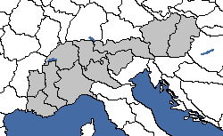
| 意识形态 | 国家名称 |
|---|---|
| 阿尔卑斯联邦 | |
| 阿尔卑斯联盟 | |
| 阿尔卑斯霸权 | |
| 阿尔卑斯保护国 |
阿尔卑斯联邦标志着以统一国家控制整个阿尔卑斯地区。 瑞士可以通过禁止外国纳粹宣传并走上支持戈特哈德联盟的路线来成立该国。随着民主支持度不断下降，该联邦索要福拉尔贝格，并通过在邻近地区的全民公投扩张其领地。瑞士
瑞士可以通过禁止外国纳粹宣传并走上支持戈特哈德联盟的路线来成立该国。随着民主支持度不断下降，该联邦索要福拉尔贝格，并通过在邻近地区的全民公投扩张其领地。瑞士 最终会通过焦点「终身总统」强化委员会并延长现任总统的任期。与此同时，该国也获得了成立阿尔卑斯联邦的机会。一旦瑞士控制了一个非核心的阿尔卑斯州，相关决议就会出现。
最终会通过焦点「终身总统」强化委员会并延长现任总统的任期。与此同时，该国也获得了成立阿尔卑斯联邦的机会。一旦瑞士控制了一个非核心的阿尔卑斯州，相关决议就会出现。


- Formation
奥匈帝国
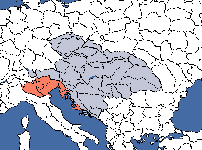
| 意识形态 | 国家名称（奥匈帝国） |
|---|---|
| 多瑙河联邦 | |
| 自治国家联合体 | |
| 奥匈帝国 | |
| 奥匈帝国 |
| 意识形态 | 国家名称（大摩拉维亚） |
|---|---|
| 摩拉维亚诸国联邦 | |
| 大摩拉维亚 | |
| 大摩拉维亚帝国 | |
| 大摩拉维亚 |
该国代表着奥地利帝国经奥地利国王兼皇帝弗朗茨·约瑟夫一世于 1867 年与匈牙利人达成妥协后所创建的多民族帝国，它此后一直存在到 1918 年崩溃。在崩溃之前，奥匈帝国是欧洲第二大帝国，仅次于俄罗斯帝国。
- Formation
以匈牙利的身份
若走君主主义分支，匈牙利国策树允许匈牙利王国变为这个新国家，并与奥地利互换颜色。它要求匈牙利王国拥有原属 奥地利的所有州。一旦征服全部奥匈领土，匈牙利王国便会获得一项决议，把其余奥匈领土转为核心领土。国旗将改为奥匈帝国的民用船旗。
奥地利的所有州。一旦征服全部奥匈领土，匈牙利王国便会获得一项决议，把其余奥匈领土转为核心领土。国旗将改为奥匈帝国的民用船旗。


由德国建立
若德国推翻纳粹党政府并恢复帝制，就有可能选取焦点「重燃帝国情绪」，这将推动三个主要构成国家走向复辟。一旦 中立主义在
中立主义在 奥地利、匈牙利王国和
奥地利、匈牙利王国和 捷克斯洛伐克的支持度升得足够高，这三个国家就会通过与上述决议类似的事件联合起来并重建奥匈帝国。由该焦点创建的奥匈帝国在其他方面被视为奥地利
捷克斯洛伐克的支持度升得足够高，这三个国家就会通过与上述决议类似的事件联合起来并重建奥匈帝国。由该焦点创建的奥匈帝国在其他方面被视为奥地利 ，而非匈牙利王国。玩家控制的奥地利、匈牙利王国或
，而非匈牙利王国。玩家控制的奥地利、匈牙利王国或 捷克斯洛伐克可以在德国完成该焦点后选取成立奥匈帝国的决议，并且在三国的不结盟支持度都超过 40% 后便可成立，同时会保留原国家的焦点和国家精神。
捷克斯洛伐克可以在德国完成该焦点后选取成立奥匈帝国的决议，并且在三国的不结盟支持度都超过 40% 后便可成立，同时会保留原国家的焦点和国家精神。


由奥斯曼人建立
在 1.10 中，焦点「施压奥匈宣称」会给予 奥地利、匈牙利王国和
奥地利、匈牙利王国和 捷克斯洛伐克 重燃帝国情绪
捷克斯洛伐克 重燃帝国情绪 。然而与德国不同，该焦点不会给予奥地利、匈牙利王国或
。然而与德国不同，该焦点不会给予奥地利、匈牙利王国或 捷克斯洛伐克上述决议，他们也无法变为奥匈帝国。
捷克斯洛伐克上述决议，他们也无法变为奥匈帝国。
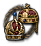
Baltic-Belarus
波罗的海-白俄罗斯是一个集合称谓，用来指三个关系极为密切的可成立国家，即爱沙尼亚-白俄罗斯、拉脱维亚-白俄罗斯和立陶宛-白俄罗斯。这些可成立国家可以由三个波罗的海国家（ 爱沙尼亚、拉脱维亚
爱沙尼亚、拉脱维亚 、立陶宛）各自成立，且在任意时刻只能成立其中一个。这些国家的历史背景是：它们各自都是短暂存在的立陶宛-白俄罗斯社会主义苏维埃共和国的重建，那是 1919—1920 年立陶宛-苏维埃战争与波苏战争期间存在了约五个月的苏联傀儡国。
、立陶宛）各自成立，且在任意时刻只能成立其中一个。这些国家的历史背景是：它们各自都是短暂存在的立陶宛-白俄罗斯社会主义苏维埃共和国的重建，那是 1919—1920 年立陶宛-苏维埃战争与波苏战争期间存在了约五个月的苏联傀儡国。


要成立该国，三个波罗的海国家都必须沿其国策树的共产主义分支推进，通过内战推翻政府，此后便会开启通过宣传战把其余波罗的海国家转变为共产主义国家的选项（从而得以成立波罗的海联邦），同时还能取得白俄罗斯以获得更多领土。

- 如果该波罗的海国家选择与
 苏联站在一起，苏联将把其白俄罗斯的那一半割让给该波罗的海国家，其余部分则通过战争或通过《莫洛托夫-里宾特洛甫条约》以及瓜分波兰
苏联站在一起，苏联将把其白俄罗斯的那一半割让给该波罗的海国家，其余部分则通过战争或通过《莫洛托夫-里宾特洛甫条约》以及瓜分波兰 来取得。
来取得。 - 如果该波罗的海国家选择保持独立并加入反对派，那么就必须通过对抗手段取得白俄罗斯。该波罗的海国家必须像西班牙内战中的驻军控制机制那样，在白俄罗斯宣传对统一的支持。这会启动一个倒计时，时间耗尽后白俄罗斯将被释放并在其中爆发内战；胜者会被并入获胜的波罗的海国家或苏联。白俄罗斯的其余部分则必须通过武力从波兰手中征服。
| 意识形态 | 国家名称 |
|---|---|
| 爱沙尼亚-白俄罗斯共和国 | |
| 爱沙尼亚-白俄罗斯苏维埃社会主义共和国 | |
| 爱沙尼亚-白俄罗斯民族主义议会 | |
| Estonia-Belarus |
| 意识形态 | 国家名称 |
|---|---|
| 拉脱维亚-白俄罗斯共和国 | |
| 拉脱维亚-白俄罗斯苏维埃社会主义共和国 | |
| 拉脱维亚-白俄罗斯民族主义议会 | |
| Latvia-Belarus |
| 意识形态 | 国家名称 |
|---|---|
| 立陶宛-白俄罗斯共和国 | |
| 立陶宛-白俄罗斯苏维埃社会主义共和国 | |
| 立陶宛-白俄罗斯民族主义议会 | |
| Lithuania-Belarus |
波罗的海联邦
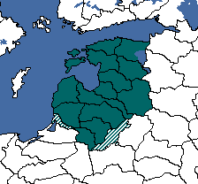
| 意识形态 | 国家名称 |
|---|---|
| 波罗的海联邦 | |
| 波罗的海社会主义共和国 | |
| 波罗的海单一制国家 | |
| 波罗的会议 |
波罗的海联邦代表着 1918 年俄罗斯帝国崩溃后提出的波罗的海诸国联邦方案，即所谓的联合波罗的海公国。它最终从未真正成立，但波罗的海诸国此后仍继续保持密切关系，这一点至今依然如此。
- Formation
波罗的海自治领
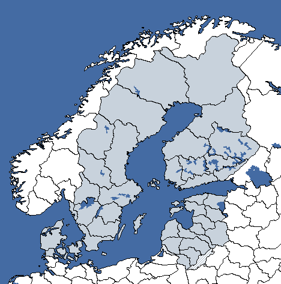
| 意识形态 | 国家名称 |
|---|---|
| 波罗的海共和国 | |
| 波罗的海各族人民联合共和国 | |
| 丹麦帝国 | |
| 波罗的海自治领 |
波罗的海自治领是一个可成立国家，由 丹麦本土、瑞典
丹麦本土、瑞典 、芬兰以及三个波罗的海国家
、芬兰以及三个波罗的海国家 爱沙尼亚、拉脱维亚
爱沙尼亚、拉脱维亚 和立陶宛组成。它可以由
和立陶宛组成。它可以由 丹麦成立。最简单的做法是统一右翼。此后你可以选择走君主主义路线或法西斯主义路线，最终通过焦点「Dominium Maris Baltici」获得对波兰
丹麦成立。最简单的做法是统一右翼。此后你可以选择走君主主义路线或法西斯主义路线，最终通过焦点「Dominium Maris Baltici」获得对波兰 和波罗的海诸国的征服（焦点）战争目标。若作此选择，则无法成立北欧联盟和北海联邦。
和波罗的海诸国的征服（焦点）战争目标。若作此选择，则无法成立北欧联盟和北海联邦。


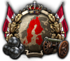
- Formation
拜占庭帝国
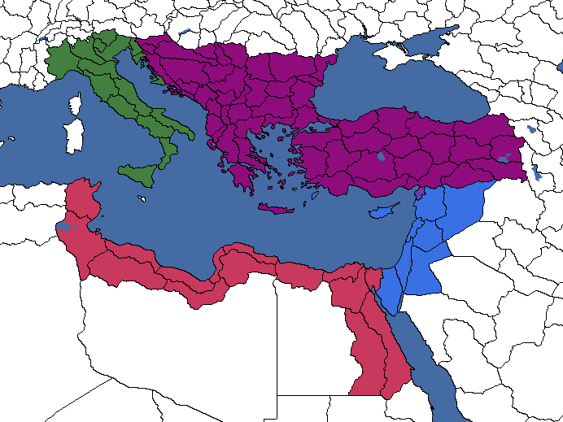
拜占庭帝国代表公元 395 年罗马帝国分裂为东西两部分之后的东半部分。它是一个可成立国家。西罗马帝国于 476 年崩溃后，东罗马帝国（又称拜占庭）又继续存在了近一千年，直至 1453 年自身灭亡。与西罗马帝国以拉丁文化为主不同，尽管被称为东罗马帝国，拜占庭帝国在文化上以希腊为主。
未启用博斯普鲁斯之战 DLC 时
以下决议仅在未启用 博斯普鲁斯之战 DLC 时可用。
博斯普鲁斯之战 DLC 时可用。
- Formation
拜占庭帝国的核心领土可以通过以下决议扩张（并非必须先成立拜占庭帝国才能使用这些决议）：
启用「博斯普鲁斯之战」博斯普鲁斯之战 DLC 时
以下决议仅在启用 博斯普鲁斯之战 DLC 且完成焦点「恐惧与惊骇」时可用。
博斯普鲁斯之战 DLC 且完成焦点「恐惧与惊骇」时可用。
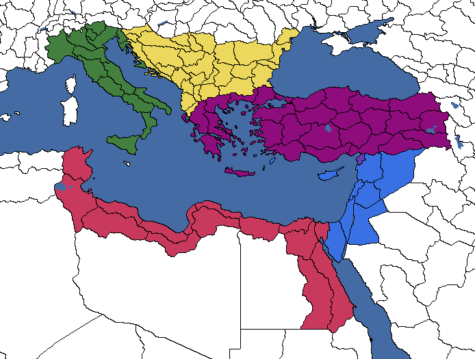
| 意识形态 | 国家名称 |
|---|---|
| 东罗马民主共和国 | |
| 拜占庭公社 | |
| 拜占庭帝国 | |
| Byzantium |
- Formation
选取该决议后， 希腊将被改名为拜占庭帝国，颜色变为紫色。拜占庭首都将迁至伊斯坦布尔，后者被重新改名为君士坦丁堡。
希腊将被改名为拜占庭帝国，颜色变为紫色。拜占庭首都将迁至伊斯坦布尔，后者被重新改名为君士坦丁堡。
此外，完成焦点「拜占庭军区制」后，以下决议将变为可用。
中欧联邦
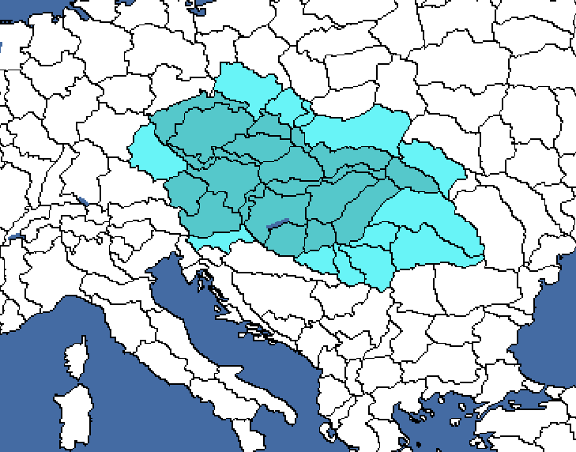
| 意识形态 | 国家名称 |
|---|---|
| 中欧联邦 | |
| 中欧联邦 | |
| 中欧联邦 | |
| 中欧联邦 |
中欧联邦由 捷克斯洛伐克在完成焦点「组建联邦」时成立。此外，这还会解锁把中欧转为核心领土、以及要求奥地利
捷克斯洛伐克在完成焦点「组建联邦」时成立。此外，这还会解锁把中欧转为核心领土、以及要求奥地利 和匈牙利加入你联邦的决议，这样做它们将成为你的傀儡国。
和匈牙利加入你联邦的决议，这样做它们将成为你的傀儡国。

- Formation
爱沙尼亚-芬兰与芬兰-乌戈尔帝国
其起源可追溯到早已逝去的年代，追溯到芬兰-乌戈尔诸民族还居住在俄国与乌克兰大部分地区的时期——那时斯拉夫诸民族尚未在公元 300—800 年的大迁徙时期到来，把他们逐出家园并推向灭绝的边缘。如今只剩下两个芬兰语国家， 爱沙尼亚与芬兰
爱沙尼亚与芬兰 ，但这两个国家仍能接过芬兰-乌戈尔诸民族的衣钵，带领他们取得对斯拉夫人的最终胜利：征服俄国与乌克兰，建立芬兰-乌戈尔帝国，从而在历史上确立自己作为最伟大的以弱胜强者之一的地位，并把斯拉夫人放到他们唯一恰当的位置上——跪伏在芬兰-乌戈尔面前。
，但这两个国家仍能接过芬兰-乌戈尔诸民族的衣钵，带领他们取得对斯拉夫人的最终胜利：征服俄国与乌克兰，建立芬兰-乌戈尔帝国，从而在历史上确立自己作为最伟大的以弱胜强者之一的地位，并把斯拉夫人放到他们唯一恰当的位置上——跪伏在芬兰-乌戈尔面前。
芬兰-乌戈尔帝国可由 爱沙尼亚在其国策树的法西斯分支中建立。这条路线让法西斯主义的瓦普斯运动在爱沙尼亚赢得民众支持，最终进军首都塔林，通过内战夺权推翻政府。此后，瓦普斯运动可以利用其与芬兰
爱沙尼亚在其国策树的法西斯分支中建立。这条路线让法西斯主义的瓦普斯运动在爱沙尼亚赢得民众支持，最终进军首都塔林，通过内战夺权推翻政府。此后，瓦普斯运动可以利用其与芬兰 同样信奉法西斯主义的 IKL 党的密切关系，向该党提供直接支持，使其在芬兰全境扩大民众支持，最终促成向赫尔辛基的进军与法西斯夺权。至此，爱沙尼亚站在了十字路口，不知自己的身份与命运该归于何处；
同样信奉法西斯主义的 IKL 党的密切关系，向该党提供直接支持，使其在芬兰全境扩大民众支持，最终促成向赫尔辛基的进军与法西斯夺权。至此，爱沙尼亚站在了十字路口，不知自己的身份与命运该归于何处；

- 她可以选择倾向其斯堪的纳维亚一面，通过该分支余下的国策以武力把瑞典、挪威
 和丹麦这些北欧国家统一在同一面旗帜下。若爱沙尼亚随后完成国策「爱沙尼亚即斯堪的纳维亚」，她将获得成立北欧联盟的决议。
和丹麦这些北欧国家统一在同一面旗帜下。若爱沙尼亚随后完成国策「爱沙尼亚即斯堪的纳维亚」，她将获得成立北欧联盟的决议。

- 另一种选择是，爱沙尼亚可以决定偏向其芬兰-乌戈尔的一面，加强与
 芬兰的关系，把两国统一为爱沙尼亚-芬兰联邦，这正是爱沙尼亚总统康斯坦丁·帕茨的抱负。两国统一之后，便可开始动员其资源，准备与苏联开战，并发动一场大规模的征服战争，吞并俄国与乌克兰，以及瑞典和挪威的北部地区，从而建立芬兰-乌戈尔帝国。为取得最佳效果，还可以选择把苏联变为傀儡国，并把其中所有可释放的国家都释放为傀儡，从而摧毁作为统一政体的俄国，让芬兰-乌戈尔取代俄国人，成为欧洲其余地区面临的东方大威胁。
芬兰的关系，把两国统一为爱沙尼亚-芬兰联邦，这正是爱沙尼亚总统康斯坦丁·帕茨的抱负。两国统一之后，便可开始动员其资源，准备与苏联开战，并发动一场大规模的征服战争，吞并俄国与乌克兰，以及瑞典和挪威的北部地区，从而建立芬兰-乌戈尔帝国。为取得最佳效果，还可以选择把苏联变为傀儡国，并把其中所有可释放的国家都释放为傀儡，从而摧毁作为统一政体的俄国，让芬兰-乌戈尔取代俄国人，成为欧洲其余地区面临的东方大威胁。
| 意识形态 | 国家名称 |
|---|---|
| 爱沙尼亚-芬兰共和国 | |
| 爱沙尼亚-芬兰人民共和国 | |
| 爱沙尼亚-芬兰联盟 | |
| Estonia-Finland |
| 意识形态 | 国家名称 |
|---|---|
| 芬兰诸族共和国 | |
| 芬兰诸族人民共和国 | |
| 芬兰-乌戈尔帝国 | |
| Finno-Ugria |
永恒北欧帝国
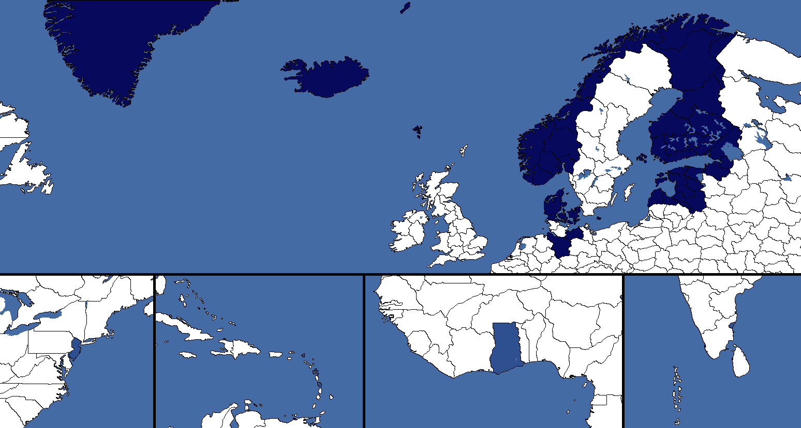
成立永恒北欧帝国的决议要求玩家走 neutrality路线、以古斯塔夫五世国王
neutrality路线、以古斯塔夫五世国王 为领袖，并完成焦点「Det Stornordiska Riket」，把国名改为 Det Stornordiska Riket。第一项决议将国王古斯塔夫五世变为古斯塔夫二世·阿道夫并获得“大帝”特质，并要求拥有所有北欧开局核心州、爱沙尼亚和拉脱维亚
为领袖，并完成焦点「Det Stornordiska Riket」，把国名改为 Det Stornordiska Riket。第一项决议将国王古斯塔夫五世变为古斯塔夫二世·阿道夫并获得“大帝”特质，并要求拥有所有北欧开局核心州、爱沙尼亚和拉脱维亚 的开局核心州、德国的梅克伦堡
的开局核心州、德国的梅克伦堡 (61)、
(61)、 汉诺威 (59)
汉诺威 (59) 两州，以及苏联的
两州，以及苏联的 卢加 (208)、列宁格勒 (195)两州。它还会给予德国与苏联各州顺从度加成。
卢加 (208)、列宁格勒 (195)两州。它还会给予德国与苏联各州顺从度加成。


第二项决议还额外需要加纳 (274)、新泽西 (359)、法属印度 (320)和法属加勒比 (694)各州，且这些州须来自 法国、英国
法国、英国 和Americans。这会创建永恒北欧帝国，使古斯塔夫二世·阿道夫获得“永恒者”称号，并把来自德国、
和Americans。这会创建永恒北欧帝国，使古斯塔夫二世·阿道夫获得“永恒者”称号，并把来自德国、 Soviets、法国
Soviets、法国 、英国和
、英国和 Americans的所需各州转为核心领土。
Americans的所需各州转为核心领土。


| 意识形态 | 国家名称 |
|---|---|
| 瑞典大国 | |
| 北欧各族人民自由民主帝国 | |
| 永恒北欧帝国 | |
| 永恒北欧帝国 |
欧洲联邦
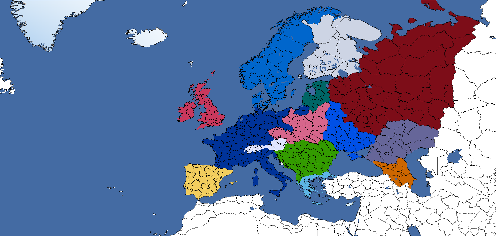
欧罗巴联邦是一个可成立国家，最初代表 1952 年发起欧洲煤钢共同体的最初 6 个国家之间的联盟，即现代欧洲联盟的前身。
从历史上看， 法国才是“合法创始者”：二战之后，法国本土满目疮痍、经济凋敝、人口锐减、殖民帝国分崩离析，法国急于避免陷入彻底的社会经济崩溃，于是在 1956 年，法国政府提出与联合王国组建法英联盟的提案，或者干脆加入英联邦以获取援助。两项提案都未能实现，法国反而转向了战败的轴心国（德国和意大利），与低地国家一道成立了欧洲煤钢共同体以维系自身，后来又改组为欧洲联盟。
法国才是“合法创始者”：二战之后，法国本土满目疮痍、经济凋敝、人口锐减、殖民帝国分崩离析，法国急于避免陷入彻底的社会经济崩溃，于是在 1956 年，法国政府提出与联合王国组建法英联盟的提案，或者干脆加入英联邦以获取援助。两项提案都未能实现，法国反而转向了战败的轴心国（德国和意大利），与低地国家一道成立了欧洲煤钢共同体以维系自身，后来又改组为欧洲联盟。
Formation
| 意识形态 | 国家名称 |
|---|---|
| 欧洲联邦 | |
| 欧洲苏维埃社会主义共和国联盟 | |
| 欧洲霸权 | |
| 欧洲国家联盟 |
Expansion
自 1.15 补丁起，欧罗巴联邦拥有一套决议，可以把几乎整个欧洲转为核心领土。
法英联盟
法英联盟是一个联盟，若法国在与英国结盟时被德国迫降， 法国和英国
法国和英国 便可成立它；若两国都同意该联盟，联合王国将吞并法国并获得法国全部核心领土的核心。法国所有军事单位和领袖都会转移给英国。虽然英国无论意识形态如何都能获得该决议，但法国只有是民主主义时才能提出该联盟。
便可成立它；若两国都同意该联盟，联合王国将吞并法国并获得法国全部核心领土的核心。法国所有军事单位和领袖都会转移给英国。虽然英国无论意识形态如何都能获得该决议，但法国只有是民主主义时才能提出该联盟。
这个联盟成立后，只在英国处于战争状态时维持。每当英国进入和平状态，都会出现一个事件，供你释放法国或保留法国。无论选择哪个选项，英国都会失去其法国核心领土。
法英联盟在 1940 年几乎成为现实：当时法国濒临战败，法国与英国政府共同讨论了两国合并、并由法国政府在海外继续作战的构想。这最终未能实现，因为法国政府内部对此存在分歧（认为该联盟不过是英国想窃取法国殖民地、让巴黎听命于伦敦的阴险企图），最终内阁辞职，菲利普·贝当元帅上台并与德国达成停火与停战协定，成立了 维希法国，只留下联合王国独自对抗德国。
维希法国，只留下联合王国独自对抗德国。
| 意识形态 | 国家名称 |
|---|---|
| 法英联盟 | |
| 欧洲人民联盟 | |
| 复辟的诺曼帝国 | |
| 大不列颠 |
德意志社会主义人民联盟
德意志社会主义人民联盟是一个可通过德国的 共产主义焦点分支成立的国家。在共产主义焦点分支中，玩家需要沿以焦点「斯巴达克同盟的遗产」开头的互斥路线推进。该路线围绕通过在欧洲各地煽动内战把邻国变为共产主义国家，并在它们成为共产主义国家后最终将其傀儡化。玩家可以选择把被傀儡化的国家变为人民委员辖区，并获得通过决议傀儡化它们的能力。
共产主义焦点分支成立的国家。在共产主义焦点分支中，玩家需要沿以焦点「斯巴达克同盟的遗产」开头的互斥路线推进。该路线围绕通过在欧洲各地煽动内战把邻国变为共产主义国家，并在它们成为共产主义国家后最终将其傀儡化。玩家可以选择把被傀儡化的国家变为人民委员辖区，并获得通过决议傀儡化它们的能力。

完成最后一个焦点「整合人民委员辖区」后，玩家将解锁整合被傀儡化的Volkskommissariats的决议。吞并第一个傀儡人民委员辖区后，德意志社会主义人民联盟便会成立，该国的名称和颜色也会改变。
| 意识形态 | 国家名称 |
|---|---|
| 德意志人民联盟 | |
| 德意志社会主义人民联盟 | |
| 德意志人民联盟 | |
| 德意志人民联盟 |
德国（重新统一）
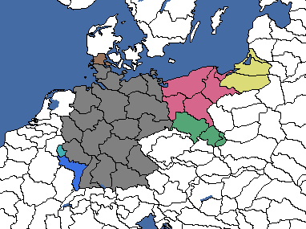
所有德国分裂小国、波兰的可释放国家 但泽、Russian
但泽、Russian 的可释放国家伏尔加德意志、历史上二战后建立的东德和西德，以及德国傀儡国
的可释放国家伏尔加德意志、历史上二战后建立的东德和西德，以及德国傀儡国 波罗的海联合公国都可以成立该国。卢森堡
波罗的海联合公国都可以成立该国。卢森堡 也可以成立该国，但仅在“德国分裂”游戏规则启用时才能做到。
也可以成立该国，但仅在“德国分裂”游戏规则启用时才能做到。


所需各州构成当今德国的边界。新成立的德国将不获得德国国策树，而是从建立它的国家那里继承国策树。随后会触发一个事件，让它把首都迁往其拥有的柏林、慕尼黑或法兰克福中的任意一座，获得 2.00% 稳定度，并授予新首都 3 个建筑位和 1 个 民用工厂。它也可以决定把首都留在原地，获得 5.00% 稳定度、3.00% 战争支持度以及首都的 4 个
民用工厂。它也可以决定把首都留在原地，获得 5.00% 稳定度、3.00% 战争支持度以及首都的 4 个 建筑位。如果首都已在柏林、慕尼黑或法兰克福，则后一选项覆盖前一选项。
建筑位。如果首都已在柏林、慕尼黑或法兰克福，则后一选项覆盖前一选项。


| 意识形态 | 国家名称 |
|---|---|
| 德意志共和国 | |
| 德意志社会主义共和国 | |
| 日耳曼帝国 | |
| 德意志帝国 |
此外，德国可以使用以下决议把卢森堡以及德意志帝国昔日的欧洲领土转为核心领土（欧本-马尔梅迪除外，游戏未表现该地）：
全球防卫委员会
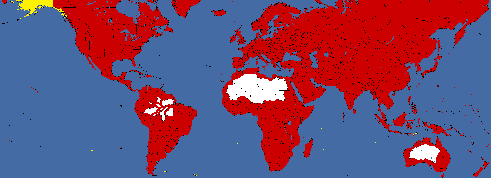
全球防卫委员会是一个可成立的“国家”，可以由阿拉贡地区防卫委员会通过共和派西班牙无政府主义路线中同名的国策创建。

由于无政府主义社会与 HoI4 中民族国家的表现方式本质上不相容，全球防御委员会不能像游戏中其他所有国家那样被视为一个常规的国家、州或国家。相反，它由无数通过直接民主治理的地方无政府主义公社组成，在那里人人平等，没有更高的领袖或其他权力职位。无政府主义者没有一支真正意义上的军队，而是专注于武装人民本身，依靠自行组织的民兵与准军事部队。
这个“国家”中的“全球防卫委员会”之所以存在，只是因为各无政府主义公社决定为安全与防卫而联合起来，而全球防卫委员会本身不过是一个为协调无政府主义者的集体军事行动而成立的组织——既为了保护自己免受其他国家侵害，也是为了建设他们心目中统一的世界（无）秩序。
全球防御委员会拥有一种独特能力：只要能占领世界上任何一个州并把顺从度提升得足够高，就能在该州产生核心，因为在这种情况下，当地民众会自行组织成自己的无政府主义公社，并加入全球防御委员会的旗下。这使全球防御委员会成为可能拥有最多核心的可成立“国家”。唯一无法产生核心的是没有任何核心的“殖民地”州，因为抵抗度与顺从度机制不适用于这些州。值得注意的是，全球防御委员会不允许建立通敌政府。
动态地把任何州转为核心领土的能力，代价是所有其他国家都会对全球防卫委员会产生敌意，并会积极采取行动摧毁它。全球防卫委员会无法组建或加入阵营，其他国家都会对它抱有敌意。全球防卫委员会实际上是独自对抗整个世界。不过有一个漏洞，允许其他国家与全球防卫委员会组建阵营。
有些州最初不属于任何国家的核心领土，但它们最终可以获得核心，然后再被全球防卫委员会转为核心领土。不过，这些事件大多很难与全球防卫委员会的常规游戏进程配合起来。见下方列表。
- 直布罗陀 (118):
- 阿图岛 (650):
- 阿拉斯加 (463):
- 圣多美 (705):
- 圣诞岛 (711)与科科斯群岛 (712)
 澳大利亚将获得核心，若游戏以规则亚洲去殖民化开局。
澳大利亚将获得核心，若游戏以规则亚洲去殖民化开局。 菲律宾联邦若完成决议
菲律宾联邦若完成决议 成立马菲林多，即可获得核心
成立马菲林多，即可获得核心- 任何能够成立大印度尼西亚邦联的国家，若完成决议
 统一马来群岛，即可获得核心。
统一马来群岛，即可获得核心。
- Andaman (733):
- 福克兰群岛 (299):
- 南佐治亚 (720):
- 皮特凯恩岛 (270):
- 百慕大 (696):
 若游戏以规则去殖民化的美洲开局，加拿大将获得一个核心。
若游戏以规则去殖民化的美洲开局，加拿大将获得一个核心。
- 圣皮埃尔和密克隆 (730):
- Ascension (703) 和 圣赫勒拿 (704)：
- Mauritius (707):
- Seychelles (709)和 Kerguelen (713)：
- 迪戈加西亚 (710):
 若游戏以规则亚洲去殖民化开局，马尔代夫将获得一个核心。
若游戏以规则亚洲去殖民化开局，马尔代夫将获得一个核心。
| 意识形态 | 国家名称 |
|---|---|
| 西班牙 | |
| 共和西班牙 | |
| 国民西班牙 | |
| 全球防卫委员会 |
大奥地利（及各变体）
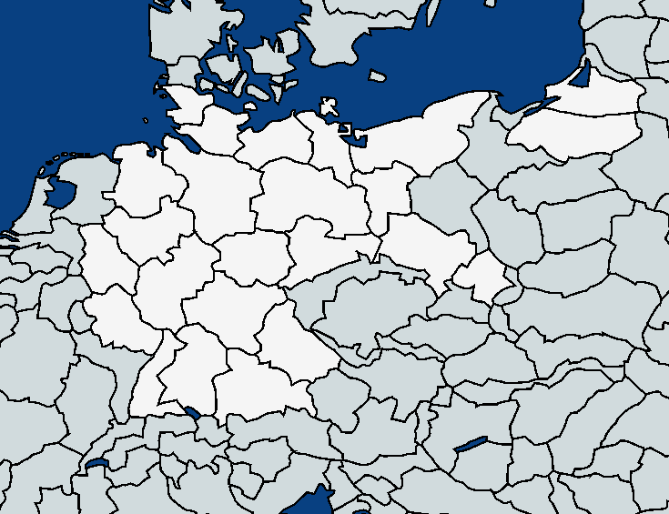
这是一个可成立国家，可以在君主主义路线或史实路线中成立，并决定你是变为不结盟还是法西斯主义。沿路推进到焦点「更好的德意志国家」，你就会得到事件“奥地利的未来”。你将有三个选项：如果你是不结盟，第一个选项会解锁整合所有德国核心领土的决议，并在之后宣告成立
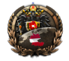
大奥地利帝国。如果你是法西斯主义，则决议保持不变，你将能够宣告成立- Formation
| 意识形态 | 国家名称 |
|---|---|
| 大奥地利帝国 | |
| 大奥地利帝国 | |
| 大奥地利帝国 | |
| 大奥地利帝国 |
如果 奥地利曾是法西斯主义，以下决议将变为可用：
奥地利曾是法西斯主义，以下决议将变为可用：
- Formation
如果 奥地利曾是法西斯主义，则可使用以下国家名称：
奥地利曾是法西斯主义，则可使用以下国家名称：
| 意识形态 | 国家名称 |
|---|---|
| Großösterreich（大奥地利） | |
| Großösterreich（大奥地利） | |
| Großösterreich（大奥地利） | |
| Großösterreich（大奥地利） |
如果你选择了第二个选项并成立了 Süddeutschland（南德意志），你将把所有南德意志州转为核心领土。以下列出各意识形态名称：
Süddeutschland（南德意志），你将把所有南德意志州转为核心领土。以下列出各意识形态名称：
- Süddeutschland（南德意志）
| 意识形态 | 国家名称 |
|---|---|
| Süddeutschland（南德意志） | |
| Süddeutschland（南德意志） | |
| Süddeutschland（南德意志） | |
| Süddeutschland（南德意志） |
大丹麦
大丹麦代表着丹麦在 1658 年《罗斯基勒条约》（将斯科讷割让给 瑞典）和 1864 年《维也纳条约》（将荷尔斯泰因割让给普鲁士）之前在斯堪的纳维亚的领土回归。在游戏中，该可成立国家不是通过决议成立，而是在 7 至 365 天之间触发如下事件时成立：
瑞典）和 1864 年《维也纳条约》（将荷尔斯泰因割让给普鲁士）之前在斯堪的纳维亚的领土回归。在游戏中，该可成立国家不是通过决议成立，而是在 7 至 365 天之间触发如下事件时成立：
Formation
| 意识形态 | 国家名称 |
|---|---|
| Store Danske Republik（大丹麦共和国） | |
| 北日耳曼人民共和国 | |
| Danske Enevaelde（丹麦专制君主国） | |
| Danske Storrige（丹麦大国） |
大芬兰（及各变体）
在第一次世界大战导致俄罗斯帝国崩溃之后， 芬兰于 1917 年宣布独立，并在 1918—1920 年的爱沙尼亚
芬兰于 1917 年宣布独立，并在 1918—1920 年的爱沙尼亚 （亲族战争）期间积极协助邻国Heimosodat、卡累利阿和因格里亚志同道合的民族主义者，向他们提供武器并派遣志愿军支援，期望统一所有芬兰语民族并建立大芬兰。这一尝试只取得了部分成功；爱沙尼亚于 1918 年独立，但卡累利阿和因格里亚的叛乱被布尔什维克镇压，芬兰的东部边界则于 1920 年通过《塔尔图条约》双边议定。
（亲族战争）期间积极协助邻国Heimosodat、卡累利阿和因格里亚志同道合的民族主义者，向他们提供武器并派遣志愿军支援，期望统一所有芬兰语民族并建立大芬兰。这一尝试只取得了部分成功；爱沙尼亚于 1918 年独立，但卡累利阿和因格里亚的叛乱被布尔什维克镇压，芬兰的东部边界则于 1920 年通过《塔尔图条约》双边议定。

然而，大芬兰的梦想在两次大战之间的整个时期乃至第二次世界大战期间，仍在芬兰文化与社会中生生不息，尤其是在右翼圈子中，例如学术卡累利阿协会、法西斯拉普阿运动及其后继政党人民爱国运动党。曼纳海姆元帅 1918 年和 1941 年的“拔剑宣言”会进一步助长这一理念。
大芬兰自然可以通过芬兰的国策树成立。共有五个不同版本的大芬兰可以成立，取决于意识形态：
- 第一个版本，即
 共产主义化身，是红色芬兰，它对应现实中的芬兰民主共和国与卡累利阿-芬兰苏维埃社会主义共和国，由苏联在冬季战争期间建立。要建立这一版本，芬兰必须完成国策 Suomalainen Sosialismi，接着完成焦点 Towards a Red Government，然后沿树向下推进到焦点 Red Finland。这样做会把芬兰的名称改为前述的红色芬兰
共产主义化身，是红色芬兰，它对应现实中的芬兰民主共和国与卡累利阿-芬兰苏维埃社会主义共和国，由苏联在冬季战争期间建立。要建立这一版本，芬兰必须完成国策 Suomalainen Sosialismi，接着完成焦点 Towards a Red Government，然后沿树向下推进到焦点 Red Finland。这样做会把芬兰的名称改为前述的红色芬兰 ，给芬兰一面新国旗，并授予摩尔曼斯克
，给芬兰一面新国旗，并授予摩尔曼斯克 (213)
(213) 、奥涅加 (215)、奥洛涅茨 (216)、北博滕 (666) 以及芬马克 (925)各州核心。在这一版本中，红色芬兰确立自身为共产国际（Comintern）的北方守护者，随时准备把工人革命传播到北欧与波罗的海各国，甚至可能尝试跨越大西洋，把革命带到英国与美国的本土。
、奥涅加 (215)、奥洛涅茨 (216)、北博滕 (666) 以及芬马克 (925)各州核心。在这一版本中，红色芬兰确立自身为共产国际（Comintern）的北方守护者，随时准备把工人革命传播到北欧与波罗的海各国，甚至可能尝试跨越大西洋，把革命带到英国与美国的本土。
- 第二个版本，即共产主义与
 社会民主共用的化身，是芬兰-俄罗斯共和国联邦。要建立这一版本，芬兰必须完成国策 Suomalainen Sosialismi 或国策 Social-Democracy，然后沿树向下推进到焦点 Confederated Finno-Russian Republics。这样做会把芬兰的名称改为前述的芬兰-俄罗斯共和国联邦，把芬兰的颜色改为淡黄色，给出一面新国旗，并解锁一组决议，授予整个
社会民主共用的化身，是芬兰-俄罗斯共和国联邦。要建立这一版本，芬兰必须完成国策 Suomalainen Sosialismi 或国策 Social-Democracy，然后沿树向下推进到焦点 Confederated Finno-Russian Republics。这样做会把芬兰的名称改为前述的芬兰-俄罗斯共和国联邦，把芬兰的颜色改为淡黄色，给出一面新国旗，并解锁一组决议，授予整个 爱沙尼亚以及
爱沙尼亚以及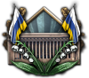
诺尔兰 (144)、 列宁格勒 (195)、卢加 (208)、Pskov (209)、摩尔曼斯克 (213)、Arkhangelsk (214)、奥涅加 (215)、奥洛涅茨 (216)、沃尔霍夫 (244)、Novgorod (263)、季赫温 (264)、Vologda (351)、北博滕 (666)、Kargopol (879)、Kotlas (880)、耶姆特兰 (917)、西博滕 (918)、Troms (924) 以及芬马克 (925)各州核心。此外，苏联的每一个核心州在被 CFFR 占领时都将获得额外+0.25%的每日顺从度。大芬兰的这一化身是芬兰发起的一项新奇的社会政治工程，旨在篡夺苏联并控制其土地，其方式是把自己展现为一支解放与启蒙的力量，终结了法西斯主义与共产主义的暴虐压迫，如今正让苏联各民族第一次真正体验到自由社会民主主义，以及共和主义与自由、平等、团结这些西方理念。没有神祇，没有沙皇，也没有元首，只有人民。民有、民治、民享。
列宁格勒 (195)、卢加 (208)、Pskov (209)、摩尔曼斯克 (213)、Arkhangelsk (214)、奥涅加 (215)、奥洛涅茨 (216)、沃尔霍夫 (244)、Novgorod (263)、季赫温 (264)、Vologda (351)、北博滕 (666)、Kargopol (879)、Kotlas (880)、耶姆特兰 (917)、西博滕 (918)、Troms (924) 以及芬马克 (925)各州核心。此外，苏联的每一个核心州在被 CFFR 占领时都将获得额外+0.25%的每日顺从度。大芬兰的这一化身是芬兰发起的一项新奇的社会政治工程，旨在篡夺苏联并控制其土地，其方式是把自己展现为一支解放与启蒙的力量，终结了法西斯主义与共产主义的暴虐压迫，如今正让苏联各民族第一次真正体验到自由社会民主主义，以及共和主义与自由、平等、团结这些西方理念。没有神祇，没有沙皇，也没有元首，只有人民。民有、民治、民享。
- 第三个版本，即社会民主化身，是大芬兰联邦。要建立这一版本，芬兰必须完成国策 Suomalainen Sosialismi，接着完成焦点 Social-Democracy，然后沿树向下推进到焦点 Proclaim Grand Finnish Federation。这样做会把芬兰的名称改为前述的大芬兰联邦，给芬兰一面新国旗，把芬兰的颜色改为偏灰的白，并授予摩尔曼斯克
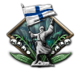
(213)、奥涅加 (215)、奥洛涅茨 (216)、北博滕 (666) 以及芬马克 (925)各州核心。在这一版本中，芬兰与西方主要民主国家法国、英国、美国结盟，成为北欧与波罗的海地区的守护者，把这些地区牢牢置于西方盟国的控制之下，并阻止德国或苏联向该地区的任何扩张，无论是在第二次世界大战期间还是之后。

- 第四和第五个版本，是共享的
 法西斯主义与
法西斯主义与 中立主义化身，对应大芬兰，以及中立主义专属化身（即大芬兰王国）。要建立其中任一版本，芬兰必须完成国策 Finnish Neutrality 或国策 Right-Wing Policies，然后沿树向下推进到 Finnish March of Conquest、Militarized Society 或 Keepers of the North 中的任一焦点，由此解锁焦点 Greater Finland。这样做会把芬兰的名称改为前述的
中立主义化身，对应大芬兰，以及中立主义专属化身（即大芬兰王国）。要建立其中任一版本，芬兰必须完成国策 Finnish Neutrality 或国策 Right-Wing Policies，然后沿树向下推进到 Finnish March of Conquest、Militarized Society 或 Keepers of the North 中的任一焦点，由此解锁焦点 Greater Finland。这样做会把芬兰的名称改为前述的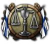
大芬兰，给芬兰一面新国旗，并授予 摩尔曼斯克 (213)、
摩尔曼斯克 (213)、 奥涅加 (215)、
奥涅加 (215)、 奥洛涅茨 (216)、北博滕 (666) 以及芬马克 (925)各州核心。如果芬兰还完成了隐藏国策 The Finnish Throne，那么大芬兰在成立时将被改名为大芬兰王国，并把颜色改为深蓝色。如果属于中立主义，那么大芬兰在成功实现把全体芬兰民族统一于一个民族国家之内的抱负后，将确立自身为北方的一个地区主要国家，或作为盟国的一员，或作为自己阵营——北方联盟——的领袖，或作为不向任何人承担效忠或义务的中立独狼。另一方面，如果属于法西斯主义，那么大芬兰将占据法西斯新秩序中的一席之地，成为北欧国家的地区霸主，以及抵御苏联残部的北方战线守护者。在这一版本中，芬兰不仅成功把全体芬兰民族统一在一面旗帜之下，还成功就 1899—1905 年以及 1908—1914 年的压迫与俄罗斯化运动向俄国复仇，消灭了布尔什维克的祸患，永远驱逐了莫斯科的毒素，锻造出一个纯洁而强大的芬兰社会，摆脱一切俄国影响的痕迹，前途一片光明。
奥洛涅茨 (216)、北博滕 (666) 以及芬马克 (925)各州核心。如果芬兰还完成了隐藏国策 The Finnish Throne，那么大芬兰在成立时将被改名为大芬兰王国，并把颜色改为深蓝色。如果属于中立主义，那么大芬兰在成功实现把全体芬兰民族统一于一个民族国家之内的抱负后，将确立自身为北方的一个地区主要国家，或作为盟国的一员，或作为自己阵营——北方联盟——的领袖，或作为不向任何人承担效忠或义务的中立独狼。另一方面，如果属于法西斯主义，那么大芬兰将占据法西斯新秩序中的一席之地，成为北欧国家的地区霸主，以及抵御苏联残部的北方战线守护者。在这一版本中，芬兰不仅成功把全体芬兰民族统一在一面旗帜之下，还成功就 1899—1905 年以及 1908—1914 年的压迫与俄罗斯化运动向俄国复仇，消灭了布尔什维克的祸患，永远驱逐了莫斯科的毒素，锻造出一个纯洁而强大的芬兰社会，摆脱一切俄国影响的痕迹，前途一片光明。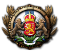
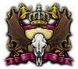

大德意志帝国
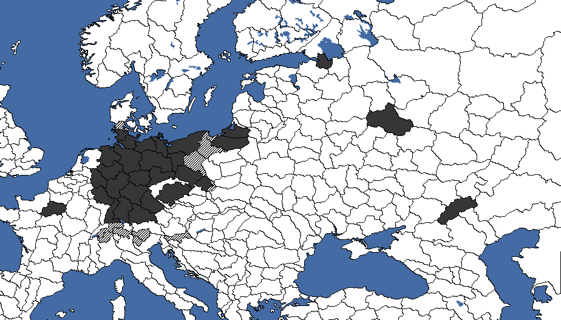
它代表着阿道夫·希特勒建立一个从低地国家延伸到乌拉尔山脉的德意志国家之计划在名义上的实现，而《钢铁雄心 4》对成立它的要求要低得多。
仅仅想让成立大德意志帝国的决议可见， 德意志国就必须是法西斯主义，并在法国不存在或已投降、且法兰西岛
德意志国就必须是法西斯主义，并在法国不存在或已投降、且法兰西岛 (16)被完全控制时完全控制莫斯科 (219)。要真正成立该国，法兰西岛 (16)、波希米亚 (9)、华沙 (10)、列宁格勒 (195)、莫斯科 (219)和Stalingrad (217)各州必须处于德国控制之下。德国还必须拥有 25 政治点数。此外，所有德国拥有的州都必须处于德国控制之下。实际上，这意味着任何盟军对德国领土的侵入都会使德国失去成立大德意志帝国的资格，直到该侵入被击退为止。选取该决议后，若若干州由德国或其附庸拥有并控制，它们将变为核心领土。意大利和南斯拉夫的州必须有一个与德国核心领土相邻的州。
(16)被完全控制时完全控制莫斯科 (219)。要真正成立该国，法兰西岛 (16)、波希米亚 (9)、华沙 (10)、列宁格勒 (195)、莫斯科 (219)和Stalingrad (217)各州必须处于德国控制之下。德国还必须拥有 25 政治点数。此外，所有德国拥有的州都必须处于德国控制之下。实际上，这意味着任何盟军对德国领土的侵入都会使德国失去成立大德意志帝国的资格，直到该侵入被击退为止。选取该决议后，若若干州由德国或其附庸拥有并控制，它们将变为核心领土。意大利和南斯拉夫的州必须有一个与德国核心领土相邻的州。
成立时，该国颜色变为黑色。柏林更名为日耳曼尼亚，并获得 25 个胜利点。
| 意识形态 | 国家名称 |
|---|---|
| 德意志共和国 | |
| 德意志社会主义共和国 | |
| 大德意志帝国 | |
| 德意志帝国 |
大德意志无产阶级国
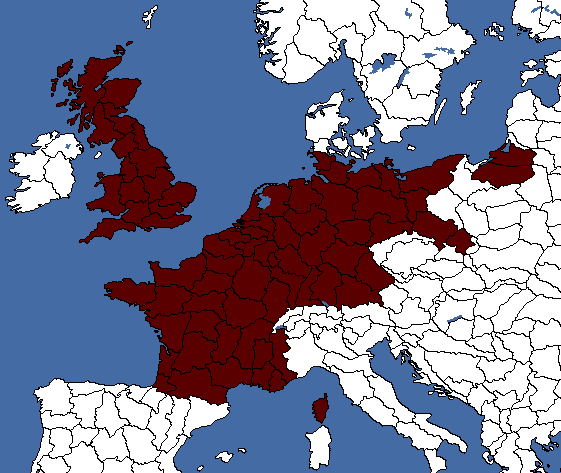
共产主义德国可以在重整国防军并赢得德国内战击败纳粹之后，通过决议创建这个可成立国家，随后发动无产阶级革命，并在人民胜利后成为 德意志社会主义共和国。铲除帝国主义会通向焦点「称霸欧洲」，它最终解锁宣告成立大德意志无产阶级国的决议。
德意志社会主义共和国。铲除帝国主义会通向焦点「称霸欧洲」，它最终解锁宣告成立大德意志无产阶级国的决议。
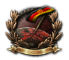
| 意识形态 | 国家名称 |
|---|---|
| 大德意志国 | |
| 大德意志无产阶级国 | |
| 大德意志国 | |
| 大德意志国 |
大匈牙利
 匈牙利可以通过焦点「宣告大匈牙利」成立大匈牙利，代表着其第一次世界大战前边界的复辟，以及对《特里亚农条约》这一不光彩屈辱的强力消除。
匈牙利可以通过焦点「宣告大匈牙利」成立大匈牙利，代表着其第一次世界大战前边界的复辟，以及对《特里亚农条约》这一不光彩屈辱的强力消除。

经由德国成立
 德国可以通过焦点「奥地利问题」为匈牙利成立大匈牙利；匈牙利会收到一个事件，选择与德国结盟，若他们接受，就会成立
德国可以通过焦点「奥地利问题」为匈牙利成立大匈牙利；匈牙利会收到一个事件，选择与德国结盟，若他们接受，就会成立 大匈牙利并获得对前匈牙利各州的宣称。
大匈牙利并获得对前匈牙利各州的宣称。
| 意识形态 | 国家名称 |
|---|---|
| 匈牙利联邦共和国 | |
| 巴尔干社会主义联盟 | |
| 大匈牙利 | |
| 大匈牙利 |
大意大利
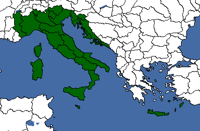
大意大利是 意大利可用的两个主要可成立国家之一——另一个是罗马帝国。除非你走教宗国路线（那样两个决议都可以选取），否则这两者只能完成其中一个。成立大意大利是该国自第一次世界大战以来的目标，如今则需要转向意大利民族收复主义。该成立条件似乎只对法西斯、中立和民主的意大利可用，但共产主义意大利也可以完成。
意大利可用的两个主要可成立国家之一——另一个是罗马帝国。除非你走教宗国路线（那样两个决议都可以选取），否则这两者只能完成其中一个。成立大意大利是该国自第一次世界大战以来的目标，如今则需要转向意大利民族收复主义。该成立条件似乎只对法西斯、中立和民主的意大利可用，但共产主义意大利也可以完成。
| 意识形态 | 国家名称 |
|---|---|
| 意大利联合联邦 | |
| 意大利各族人民联盟 | |
| 大意大利 | |
| 意大利帝国 |
大立陶宛
大立陶宛可由 立陶宛作为其国策树法西斯分支的一部分成立，代表着旧立陶宛大公国的复辟——该公国早在 11 世纪初便已存在（12 世纪完成整合），直至 1795 年波兰-立陶宛联邦最终被瓜分时灭亡。
立陶宛作为其国策树法西斯分支的一部分成立，代表着旧立陶宛大公国的复辟——该公国早在 11 世纪初便已存在（12 世纪完成整合），直至 1795 年波兰-立陶宛联邦最终被瓜分时灭亡。

要成立这一国家，立陶宛必须走其国策树的法西斯分支，选择把法西斯政治家奥古斯丁纳斯·沃尔德马拉斯从狱中释放。作为法西斯“铁狼”运动的领袖，沃尔德马拉斯将开始获得民众支持，逐步颠覆政府并把国家转向法西斯主义。一旦掌权，立陶宛便能走上战争之路，开始向邻国扩张：向 德国
德国 索取下立陶宛（或柯尼斯堡），向爱沙尼亚和
索取下立陶宛（或柯尼斯堡），向爱沙尼亚和 拉脱维亚索取利沃尼亚，或是入侵波兰
拉脱维亚索取利沃尼亚，或是入侵波兰 ，或是通过支持其本土法西斯分子在意识形态上使其倒向自己，并在两种情况下都向它索回维尔纽斯（波兰语称 Wilno）。最后，复兴的大立陶宛的终极野心是粉碎苏联，征服乌克兰的肥沃土地，恢复早在俄国作为一个统一政体存在之前立陶宛的历史边界。一旦完全实现，大立陶宛将囊括整个波罗的海地区、波兰东部、全部乌克兰以及俄罗斯西部的大片区域，把俄国与大立陶宛之间的边界推到莫斯科近郊。
，或是通过支持其本土法西斯分子在意识形态上使其倒向自己，并在两种情况下都向它索回维尔纽斯（波兰语称 Wilno）。最后，复兴的大立陶宛的终极野心是粉碎苏联，征服乌克兰的肥沃土地，恢复早在俄国作为一个统一政体存在之前立陶宛的历史边界。一旦完全实现，大立陶宛将囊括整个波罗的海地区、波兰东部、全部乌克兰以及俄罗斯西部的大片区域，把俄国与大立陶宛之间的边界推到莫斯科近郊。

| 意识形态 | 国家名称 |
|---|---|
| Lithuania-Ruthenia | |
| 大立陶宛人民共和国 | |
| 大立陶宛 | |
| 立陶宛王国 |
Hellas
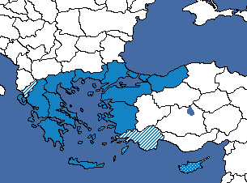
希腊，或称大希腊，是一个旨在把爱琴海周边所有希腊民族统一为一个民族国家的构想。一战后希腊-土耳其战争期间曾尝试实现这一构想，但以失败告终，此后未再尝试；不过，一个足够好战的 希腊可以决定重拾这一构想，通过决定性地击败土耳其
希腊可以决定重拾这一构想，通过决定性地击败土耳其 来实现它。
来实现它。
- 其他决议
| 意识形态 | 国家名称 |
|---|---|
| Hellas | |
| 爱琴公社 | |
| 希腊化帝国 | |
| 大希腊王国 |
海尔维希亚共和国
 瑞士可以通过禁止外国纳粹宣传并走上支持戈特哈德联盟的路线来成立该国。随着民主支持度不断下降，该联邦索要福拉尔贝格，并通过在邻近地区的全民公投扩张其领地。瑞士最终会通过焦点「终身总统」强化委员会并延长现任总统的任期。这会解锁“解散委员会”决议，从而成立海尔维希亚共和国。
瑞士可以通过禁止外国纳粹宣传并走上支持戈特哈德联盟的路线来成立该国。随着民主支持度不断下降，该联邦索要福拉尔贝格，并通过在邻近地区的全民公投扩张其领地。瑞士最终会通过焦点「终身总统」强化委员会并延长现任总统的任期。这会解锁“解散委员会”决议，从而成立海尔维希亚共和国。


- Formation
| 意识形态 | 国家名称 |
|---|---|
| 海尔维希亚共和国 | |
| 海尔维希亚共和国 | |
| 海尔维希亚共和国 | |
| 海尔维希亚共和国 |
神圣罗马帝国
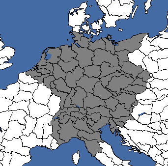
神圣罗马帝国是一个可成立国家，代表着最初的神圣罗马帝国——它于 800 年作为西罗马帝国的继承国形成，并从 962 年存在到 1806 年。它可以由 德意志国、奥地利
德意志国、奥地利 （包括列支敦士登）和捷克斯洛伐克成立。
（包括列支敦士登）和捷克斯洛伐克成立。


重建神圣罗马帝国稍微有点困难，因为它需要采取一整套特殊操作，并且需要一点运气才能让正确的事件发生。
要作为德国重建该国，必须选取国策「重整国防军」。此外，兴登堡必须存活：可使用航空安全管制决议，或持续处于战争状态直到 1937 年 5 月 5 日（某个补丁修改过：现在选取恢复英国头衔的决议要求兴登堡在事件中生还，否则相应的旗标永远不会被触发），或依靠 30% 的概率。赢得交战后，必须选取国策「复兴帝制」以及「皇帝归来」。选取该焦点后，必须让荷兰阻止威廉二世返回，然后改为选择让威廉三世回到德国。要实现这一点，可以让荷兰军队比德国更强——若因内战损失而未能做到，可以解散大部分乃至全部军队。随后，必须完成国策「英德防御条约」及其前置国策。这样做会依次给出三个决议：先「恢复威廉王子的继承权」，再「继承法现代化」，然后「请求恢复英国头衔」，一个接一个完成后 英国会提议举行一场皇室典礼以恢复头衔。必须提前派维多利亚·路易丝前往担任联络人。不幸的是，皇室成员将在兴登堡号坠毁中丧生，但维多利亚·路易丝幸存下来，成为维多利亚一世，即新的女皇。维多利亚一世掌权后，德国便有资格恢复神圣罗马帝国，只需征服所需领土即可执行该决议。
英国会提议举行一场皇室典礼以恢复头衔。必须提前派维多利亚·路易丝前往担任联络人。不幸的是，皇室成员将在兴登堡号坠毁中丧生，但维多利亚·路易丝幸存下来，成为维多利亚一世，即新的女皇。维多利亚一世掌权后，德国便有资格恢复神圣罗马帝国，只需征服所需领土即可执行该决议。


控制所有必需领土后，这些州全部变为核心领土，国旗则改为神圣罗马帝国的帝国旗帜。
| 意识形态 | 国家名称 |
|---|---|
| 中欧联邦共和国 | |
| 德意志委员会共和国联盟 | |
| 德意志民族神圣罗马帝国 | |
| 神圣罗马帝国 |
Iberia
 伊比利亚代表统一的伊比利亚半岛，与 1580 年至 1640 年间存在的伊比利亚联盟类似。与大多数其他可成立国家不同，伊比利亚不是通过决议成立，而是通过国策创建。它可以由葡萄牙、卡洛斯派西班牙或无政府主义西班牙成立。无论由谁成立该国，除所有葡萄牙与西班牙州之外，成立伊比利亚还会给予玩家直布罗陀的核心领土（从而使玩家无需关闭史实模式并指望英国选择重新审视其殖民政策，就能收回该半岛）。
伊比利亚代表统一的伊比利亚半岛，与 1580 年至 1640 年间存在的伊比利亚联盟类似。与大多数其他可成立国家不同，伊比利亚不是通过决议成立，而是通过国策创建。它可以由葡萄牙、卡洛斯派西班牙或无政府主义西班牙成立。无论由谁成立该国，除所有葡萄牙与西班牙州之外，成立伊比利亚还会给予玩家直布罗陀的核心领土（从而使玩家无需关闭史实模式并指望英国选择重新审视其殖民政策，就能收回该半岛）。


Formation
以葡萄牙的身份
要以 葡萄牙的身份成立伊比利亚，你必须转为共产主义，方法是完成焦点「伊比利亚的工人们，联合起来！」，这会在葡萄牙
葡萄牙的身份成立伊比利亚，你必须转为共产主义，方法是完成焦点「伊比利亚的工人们，联合起来！」，这会在葡萄牙 引发内战，并让共和西班牙加入西班牙内战。西班牙内战结束后，完成焦点「伊比利亚社会主义联盟」将使
引发内战，并让共和西班牙加入西班牙内战。西班牙内战结束后，完成焦点「伊比利亚社会主义联盟」将使 葡萄牙变为伊比利亚，并获得所有西班牙核心州的核心领土。西班牙
葡萄牙变为伊比利亚，并获得所有西班牙核心州的核心领土。西班牙 将收到一个事件，供其选择是否被吞并。
将收到一个事件，供其选择是否被吞并。


以卡洛斯派西班牙的身份
要以卡洛斯派西班牙的身份成立伊比利亚，请赢得西班牙内战并完成焦点「恢复伊比利亚联盟」。 葡萄牙随后会收到一个事件，若它接受，西班牙将吞并葡萄牙
葡萄牙随后会收到一个事件，若它接受，西班牙将吞并葡萄牙 并获得其核心领土。若它拒绝，西班牙将获得一个战争目标。若葡萄牙已完成焦点「皇家伊比利亚联盟」，接受的概率会大幅提高。如果葡萄牙是西班牙的傀儡国，它将总是同意。
并获得其核心领土。若它拒绝，西班牙将获得一个战争目标。若葡萄牙已完成焦点「皇家伊比利亚联盟」，接受的概率会大幅提高。如果葡萄牙是西班牙的傀儡国，它将总是同意。


以阿拉贡地区防卫委员会的身份
要以阿拉贡地区防卫委员会的身份成立伊比利亚，请完成焦点「葡萄牙无政府主义」，在 葡萄牙挑起内战，使无政府主义西班牙加入Anarchists
葡萄牙挑起内战，使无政府主义西班牙加入Anarchists 。若葡萄牙已处于内战中，无政府主义西班牙将改为获得一个战争目标。一旦
。若葡萄牙已处于内战中，无政府主义西班牙将改为获得一个战争目标。一旦 葡萄牙处于西班牙控制之下，它就会成为傀儡国。完成焦点「伊比利亚地区防卫委员会」将吞并
葡萄牙处于西班牙控制之下，它就会成为傀儡国。完成焦点「伊比利亚地区防卫委员会」将吞并 葡萄牙并变为伊比利亚地区防卫委员会。
葡萄牙并变为伊比利亚地区防卫委员会。


以共产主义西班牙的身份
要以共产主义西班牙的身份成立伊比利亚，请赢得西班牙内战并完成焦点「红色伊比利亚」。若 葡萄牙是共产主义，它将收到一个事件，若它接受，共产主义西班牙将吞并葡萄牙
葡萄牙是共产主义，它将收到一个事件，若它接受，共产主义西班牙将吞并葡萄牙 并获得其核心领土。若它拒绝，共产主义西班牙将获得一个战争目标。
并获得其核心领土。若它拒绝，共产主义西班牙将获得一个战争目标。


| 意识形态 | 国家名称 |
|---|---|
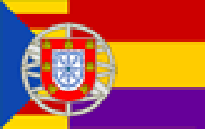 伊比利亚联合共和国 | |
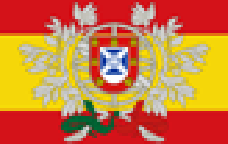 伊比利亚帝国 | |
Idel-Ural
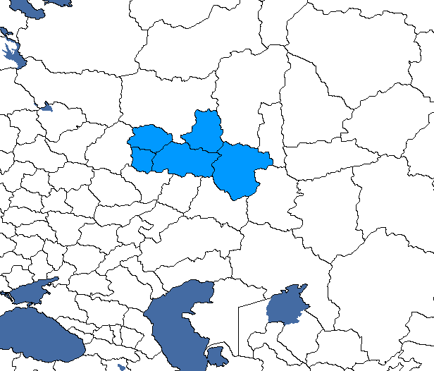
若 苏联因故解体，那么历史上伊德尔-乌拉尔地区的某个可释放继承国便可决定收拾这个陨落联盟的残局，通过在南乌拉尔成立一个统一国家来挽救尚可挽救之物。要成立伊德尔-乌拉尔，必须统一该地区的各构成共和国。历史上，俄罗斯革命期间该地区确实存在过一个以此为名的短命鞑靼国家。
苏联因故解体，那么历史上伊德尔-乌拉尔地区的某个可释放继承国便可决定收拾这个陨落联盟的残局，通过在南乌拉尔成立一个统一国家来挽救尚可挽救之物。要成立伊德尔-乌拉尔，必须统一该地区的各构成共和国。历史上，俄罗斯革命期间该地区确实存在过一个以此为名的短命鞑靼国家。
| 意识形态 | 国家名称 | 国家名称（苏联傀儡） |
|---|---|---|
| 伊德尔-乌拉尔共和国 | ||
| 乌拉尔联邦公社 | 伊德尔-乌拉尔联邦苏维埃社会主义共和国 | |
| 南乌拉尔帝国 | ||
| 伊德尔-乌拉尔国 |
帝国联邦
 帝国联邦是一个特殊的可成立国家，只能由英国
帝国联邦是一个特殊的可成立国家，只能由英国 作为其国策树的一部分成立。帝国联邦是 19 世纪末至 20 世纪初提出的一项方案，当时大英帝国的前途开始变得不确定。按照帝国联邦方案，大英帝国将被统一为一个单一的联邦超级国家，以保全帝国本身及其在世界上的地位。这最终从未实现，因为大萧条与两次世界大战的爆发意味着，出于社会、军事和经济压力，殖民地的内部自治得以维持，而随着各自治领获得独立，大英帝国最终分崩离析，美国取代英国成为首要的世界超级大国。大英帝国的残余至今仍以英联邦的形式存在，此外还有提议中的 CANZUK 联盟和太平洋联盟。然而在《钢铁雄心 4》中，凭借娴熟的玩法，玩家不仅能成立帝国联邦，从而确保大英帝国的存续（与强盛），甚至还能把帝国扩张到近乎全球霸权的地步（即比全球超级大国更大更强的东西）。
作为其国策树的一部分成立。帝国联邦是 19 世纪末至 20 世纪初提出的一项方案，当时大英帝国的前途开始变得不确定。按照帝国联邦方案，大英帝国将被统一为一个单一的联邦超级国家，以保全帝国本身及其在世界上的地位。这最终从未实现，因为大萧条与两次世界大战的爆发意味着，出于社会、军事和经济压力，殖民地的内部自治得以维持，而随着各自治领获得独立，大英帝国最终分崩离析，美国取代英国成为首要的世界超级大国。大英帝国的残余至今仍以英联邦的形式存在，此外还有提议中的 CANZUK 联盟和太平洋联盟。然而在《钢铁雄心 4》中，凭借娴熟的玩法，玩家不仅能成立帝国联邦，从而确保大英帝国的存续（与强盛），甚至还能把帝国扩张到近乎全球霸权的地步（即比全球超级大国更大更强的东西）。
成立帝国联邦是游戏中最漫长的过程之一；即使你倾尽全力去统一大英帝国，最早也要等到 4 年之后（约 1940 年）才可能成立该国。尽管如此，帝国联邦（在最大规模时）有潜力让你把 英国、美国
英国、美国 、法国、德国、
、法国、德国、 意大利、荷兰
意大利、荷兰 、比利时、
、比利时、 卢森堡、加拿大
卢森堡、加拿大 、南非、
、南非、 澳大利亚、新西兰
澳大利亚、新西兰 ，以及依靠运气或存读档的西班牙、
，以及依靠运气或存读档的西班牙、 葡萄牙、巴西
葡萄牙、巴西 合并为一个在同一面旗帜下统一、并对上述所有国家拥有核心领土的单一超级国家，这使帝国联邦轻松成为最强的可成立国家之一，也是可能核心领土数量第二多的可成立国家，仅次于全球防卫委员会（如果它还能算是一个“国家”的话）。
合并为一个在同一面旗帜下统一、并对上述所有国家拥有核心领土的单一超级国家，这使帝国联邦轻松成为最强的可成立国家之一，也是可能核心领土数量第二多的可成立国家，仅次于全球防卫委员会（如果它还能算是一个“国家”的话）。


帝国联邦可以以除 共产主义之外的任何意识形态成立。
共产主义之外的任何意识形态成立。
Formation
要成立帝国联邦，必须选取国策「加强帝国」，以开启通往创建帝国联邦的道路。此后，国策「英联邦纽带」会打开最终通往帝国联邦的分支。该分支包含一系列国策，通过增加工业和建筑位来发展英国的自治领，同时因投资而略微降低自治领的自治度。

该分支中一个重要的焦点是「印度自治」，必须在帝国会议开始前完成；否则 英属印度永远不会同意成立帝国联邦的提案。由于该焦点会给予印度越来越多的自治权，为了尽快吞并印度，最好在帝国会议之前才立即授予自治权。然而，也可以在缺少印度的情况下成立帝国联邦；若他们拒绝但其他所有自治领都同意，你将获得一个选择：要么与其他自治领继续成立联邦但让印度获得自由，要么保留英属印度作为附庸国但完全不成立联邦。
英属印度永远不会同意成立帝国联邦的提案。由于该焦点会给予印度越来越多的自治权，为了尽快吞并印度，最好在帝国会议之前才立即授予自治权。然而，也可以在缺少印度的情况下成立帝国联邦；若他们拒绝但其他所有自治领都同意，你将获得一个选择：要么与其他自治领继续成立联邦但让印度获得自由，要么保留英属印度作为附庸国但完全不成立联邦。
在整个过程中，联合王国必须确保维持对所有自治领（加拿大、 南非、英属印度
南非、英属印度 、澳大利亚和
、澳大利亚和 新西兰）的控制，因为最后那个焦点需要它们全部。有些自治领在帝国会议开始前脱离也无妨，因为它们可以被重新征服并重新傀儡化（不过失去南非可能会给获取其核心领土带来麻烦——见下方注 2）。英国只需在最后两个焦点执行期间控制所有自治领即可。
新西兰）的控制，因为最后那个焦点需要它们全部。有些自治领在帝国会议开始前脱离也无妨，因为它们可以被重新征服并重新傀儡化（不过失去南非可能会给获取其核心领土带来麻烦——见下方注 2）。英国只需在最后两个焦点执行期间控制所有自治领即可。

作为民主英国，维持对所有自治领的控制很简单，但君主主义或法西斯英国会遇到一些麻烦。法西斯英国会看到各自治领从英国转为法西斯主义 180 天后开始纷纷宣布独立，必须要么用「行动确保自治领」在它们脱离之前稳住它们，要么用「呼吁帝国保皇派」和／或「让自治领重回怀抱」重新征服它们。「行动确保自治领」能阻止它们脱离，但会让它们保持高自治度；「支持帝国主义起义」会创建起义国，这些国家在被结盟和傀儡化后会成为一体化傀儡国或帝国总督辖区，这意味着你可以在会议后立刻成立联邦，而不必等待把它们的自治度降到该水平。
法西斯与君主主义的英国应当小心，因为「让自治领重回怀抱」会让你在该焦点完成时对任何不在你阵营中的自治领的全部核心州获得宣称，每个被宣称的州都会导致与那个自治领的好感度 -10；尤其是加拿大拥有 15 个核心州，会造成基本无法逾越的 -150 好感度惩罚，使其很难保证接受最终的联邦提案。为绕开这一点，法西斯英国可以使用「行动确保自治领」，从一开始就阻止它们脱离。君主主义英国则可以利用这样一个事件：若某自治领的帝国主义起义在没有英国选取“支持帝国主义起义”决议的情况下赢得内战，它仍会请求作为傀儡国加入英国；请注意，该事件不会为法西斯起义触发。通常几个师的重型步兵志愿军就足以让加拿大的帝国主义起义获胜。
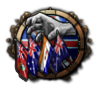
另外，也可以在某些自治领不存在的情况下召开帝国会议并成立帝国联邦，只要它们的核心州全部由英国拥有即可；因此，君主主义或法西斯英国可以直接征服其自治领并傀儡化其中至少一个，同时仍能成立联邦。
请注意！ 如果你使用国策「呼吁帝国保皇派」在各自治领煽动亲帝国起义，这些起义会以起义国的形式出现，而起义国使用的是动态国家标签，并非各自治领真正的国家标签。这一点很重要，因为它会导致此后涉及各自治领的国策、决议和事件（例如创建帝国联邦时生成核心领土）无法正常工作，从而削弱帝国联邦的主要好处。因此，最好直接由你自己入侵、征服并吞并各自治领，然后再手动将它们作为傀儡国释放，并降低其自治度以促成它们与联合王国的合并。
作为法西斯或君主主义英国，毫无问题地确保各自治领的最佳做法如下：
作为法西斯英国：事先积攒足够的政治点数，并使用国策「行动确保自治领」来强制所有自治领保持忠诚，阻止其中任何一个脱离。只要在政治点数和部队部署方面处理得当，就有可能把所有自治领都留在怀抱之中，阻止其中任何一个脱离。若无法做到，请参阅下方君主主义部分。
作为君主主义英国：使用国策「呼吁帝国保皇派」在各自治领煽动亲帝国起义，然后派遣志愿军帮助起义国获胜并推翻不忠的政府。在所有自治领都这样做，只要你不选取“支持帝国起义”下的任何决议，胜利后就会触发一个事件，由起义国提出作为一体化傀儡加入大英帝国。接受它，然后降低其自治度直到可以吞并它们。此后，释放真正的自治领（因为起义国使用动态国家标签，并非真正的自治领）。在所有自治领都这样做，一旦所有自治领都被恢复到英帝国之中并与联合王国同处一个阵营，就选取国策「让自治领重回怀抱」。这样可以避免该国策产生的宣称通常带来的好感度惩罚。
截至 1.19.2，由于加拿大将成为英联邦阵营的领袖，另一个解决办法是手动对英联邦成员之一制造战争目标、宣战，并迫使加拿大投降，这样所有阵营成员都会投降。如果他们被吞并（而非被傀儡化），那两个有问题的焦点就可以被跳过。跳过这两个焦点后，你可以把澳大利亚、新西兰、加拿大和南非作为傀儡国释放。
一旦自治领得到确保，英国可以沿国策树继续推进到帝国会议。这里最后两个焦点中的第一个是「召开帝国会议」，它会解锁一系列决议，让英国与各自治领讨论关乎整个大英帝国的事务。要想成功推动帝国会议中的所有提案，玩家应至少保留 300 政治点数，最好保留 600-700 PP，以便通过改善关系（10 点乘以五个自治领）并在每项决议上选择额外花费政治点数（每项提案最多可额外花费政治点数）来说服各自治领接受统一。英属印度必须事先通过「印度自治」国策得到满足，才会接受任何提案，无论与英国的外交关系如何或额外花费了多少政治点数。

会议开始时，每个自治领都会在会议期间与英国的好感度 -100，恰好抵消同处阵营带来的 +50 与身为傀儡国带来的 +50。同一时间只能辩论一项决议。玩家将有两个月（60 天）来完成全部五项决议；每项决议都很快解决。这些决议，包括「讨论帝国联邦」，可以按任意顺序选取。
会议决议
| 决议 | 花费（政治点数） | 成功时的效果（按每个同意的自治领计） |
| 帝国防务 | 50 | +3% 军用工厂和船坞产出（一年） 自治领：+10% 军用工厂和船坞产出（一年），对英国好感度 +10 |
| 帝国贸易 | 50 | 英国：与自治领的贸易关系 +50 自治领：对英国好感度 +10；将贸易法案改为自由贸易（建造 +15%、科研 +10%、工厂／船坞产出 +15%、投放市场的资源 80%、对他人提供的民用情报 +40%、对他人提供的海军情报 +20%） |
| 帝国经济 | 50 | +3% 民用工厂、军用工厂和船坞建造速度（一年） 自治领：+10% 民用工厂、军用工厂和船坞建造速度（一年），对英国好感度 +10 |
| Appeasement | 50 | 英国：+3% 战争支持度 自治领：+10% 战争支持度，对英国好感度 +10 |
| 成立帝国联邦 | 100 | 同意成立联邦；若所有自治领都同意，每个自治领每天获得 -3 自治度 |
选取每项决议都会触发一个事件，英国可以在其中花费不同数量的政治点数来说服各自治领同意提案。你选择的选项，结合各自治领对英国的好感度，决定它们同意的可能性；花费政治点数更多的选项和更高的好感度都会让自治领更可能同意。若某自治领同意提案，它对英国的好感度会提高，从而增加其同意最终决议的机会；同意决议的自治领越多，它们接受帝国联邦的可能性就越大。四项花费 50 政治点数的决议带来的好处会归于每个同意的自治领，并可在英国身上叠加。各自治领同意联邦决议的概率见下表；四项 50 政治点数的决议与之相同，只是最后三行与 75..79 那一行相同。四项 50 政治点数的决议只能被部分自治领接受，且对英国的价值会降低。联邦决议必须获得一致同意，或除印度以外的所有自治领同意，才会产生任何效果。因此，联邦提案成功通过的概率就是下面五个自治领各自概率相乘的结果。五个自治领全部同意的净概率介于最坏情况下的 3.1% 与最好情况下的 100% 之间。
帝国联邦决议通过概率
| Relations | “希望” +0 政治点数 | “施压” +25 政治点数 | “广泛” +50 政治点数 |
|---|---|---|---|
| < 0 | 50% | 67% | 75% |
| 0..24 | 56% | 71% | 79% |
| 25..49 | 61% | 76% | 82% |
| 50..74 | 66% | 80% | 85% |
| 75..79 | 71% | 83% | 88% |
| 80..89 | 71% | 83% | 100% |
| 90..99 | 71% | 100% | 100% |
| 100 | 100% | 100% | 100% |
如果所有自治领都同意成立联邦，就会触发一个事件，使所有自治领开始以每天3,0的速度失去自治度。尽管如此，即使与 镇压附属国叠加，英国可能仍需约 4 年才能把它们的自治度降到一体化傀儡国的水平。可以通过降低附庸国自治度的常规手段，加上帝国联邦的自治度削减来加快这一过程。每当某自治领降到更低的自治度等级，都必须花费额外的政治点数才能把它降到下一级。
镇压附属国叠加，英国可能仍需约 4 年才能把它们的自治度降到一体化傀儡国的水平。可以通过降低附庸国自治度的常规手段，加上帝国联邦的自治度削减来加快这一过程。每当某自治领降到更低的自治度等级，都必须花费额外的政治点数才能把它降到下一级。
一旦所有自治领都被降到一体化傀儡国自治度等级，玩家就可以选取最后一个国策「帝国联邦」。该焦点完成后，英国将吞并其所有自治领，采用新名称和国旗，把颜色改为深红色，并获得除整个印度和南非德兰士瓦之外所有自治领领土的核心领土。英国还会继承其前自治领的所有军事单位和军事领袖。
除核心联邦之外，还存在多种扩张帝国的可能性：
首先，若 英国通过国策「团结英语世界」在战争中击败美国
英国通过国策「团结英语世界」在战争中击败美国 ，且所有美国核心领土都由英国拥有并控制，就会出现一个名为“创建泛北美国家”的决议；一旦选取，英国拥有的所有北美领土都会交给加拿大，加拿大会改名为
，且所有美国核心领土都由英国拥有并控制，就会出现一个名为“创建泛北美国家”的决议；一旦选取，英国拥有的所有北美领土都会交给加拿大，加拿大会改名为 北美自治领，并获得美国全部核心领土的核心（包括阿拉斯加）以及一面新国旗。完成之后，一旦帝国联邦成立，英国还会获得美国全部核心领土的核心，大幅提升人口、资源与工业产能，并把帝国联邦扩张到更大的规模。为取得最佳效果，应先完成国策「召开帝国会议」并执行其中的所有决议，然后吞并美国并把其全部领土交给加拿大，最后才完成国策「帝国联邦」。
北美自治领，并获得美国全部核心领土的核心（包括阿拉斯加）以及一面新国旗。完成之后，一旦帝国联邦成立，英国还会获得美国全部核心领土的核心，大幅提升人口、资源与工业产能，并把帝国联邦扩张到更大的规模。为取得最佳效果，应先完成国策「召开帝国会议」并执行其中的所有决议，然后吞并美国并把其全部领土交给加拿大，最后才完成国策「帝国联邦」。


其次，若 英国是法西斯主义，那么在包含美国的情况下成立帝国联邦之后，就会出现一个奇特的事实：联合王国是唯一一个在法西斯主义下仍被允许成立欧洲联盟的国家，这使帝国联邦得以扩张到其最大可能的规模。帝国联邦只需征服并吞并欧盟成员国（法国、德国、意大利和低地国家）的开局核心州，即可解锁整合它们的决议。若随后成立，这个帝国“超级”联邦
英国是法西斯主义，那么在包含美国的情况下成立帝国联邦之后，就会出现一个奇特的事实：联合王国是唯一一个在法西斯主义下仍被允许成立欧洲联盟的国家，这使帝国联邦得以扩张到其最大可能的规模。帝国联邦只需征服并吞并欧盟成员国（法国、德国、意大利和低地国家）的开局核心州，即可解锁整合它们的决议。若随后成立，这个帝国“超级”联邦 （包含大英帝国、美国和欧洲联盟领土）的核心人口合计将接近半个billion人口（即近 5 亿人，与印度或中国的核心人口大致相当！）。
（包含大英帝国、美国和欧洲联盟领土）的核心人口合计将接近半个billion人口（即近 5 亿人，与印度或中国的核心人口大致相当！）。

最后，如果你的自治领成立了新国家并获得新的核心州，作为帝国联邦你可以获得它们的核心领土。有两个自治领能够做到这一点： 新西兰可以成立波利尼西亚，南非
新西兰可以成立波利尼西亚，南非 可以成立穆塔帕。（请注意，帝国联邦无法获得英属马来亚或大印度尼西亚邦联的核心领土。）然而，
可以成立穆塔帕。（请注意，帝国联邦无法获得英属马来亚或大印度尼西亚邦联的核心领土。）然而， 新西兰需要独立或达到自治领自治度等级，南非
新西兰需要独立或达到自治领自治度等级，南非 需要完全独立，它们才能成立这些国家，这使该流程在单人游戏中使用控制台指令之外的情况下颇为困难。此外，波利尼西亚需要先成立夏威夷，这意味着要同时创建泛美国家（美国核心领土所需）和波利尼西亚会非常棘手。
需要完全独立，它们才能成立这些国家，这使该流程在单人游戏中使用控制台指令之外的情况下颇为困难。此外，波利尼西亚需要先成立夏威夷，这意味着要同时创建泛美国家（美国核心领土所需）和波利尼西亚会非常棘手。


通过把核心领土从一个可成立国家转移到另一个可成立国家，还可以将更多土地转为核心领土。西班牙可以通过两个可成立国家被纳入帝国“超级”联邦，即法兰克-西班牙王国和法英联盟。法兰克-西班牙王国可由波旁 法国通过国策「合并王冠」成立。法英联盟也可以由法国
法国通过国策「合并王冠」成立。法英联盟也可以由法国 成立，条件是它在与德意志国结盟时向
成立，条件是它在与德意志国结盟时向 英国投降。虽然成立法英联盟看起来多此一举，因为通过成立欧洲联盟已经可以获得本土法国
英国投降。虽然成立法英联盟看起来多此一举，因为通过成立欧洲联盟已经可以获得本土法国 的核心领土，但并非所有法国核心领土都能通过成立欧洲联盟获得核心，而法英联盟确实会把所有法国核心领土转移给英国。这样一来，不仅可以经由法兰克-西班牙王国把西班牙转为核心领土，还能通过法国国策「法兰西联盟」和「大西洋比利牛斯」把
的核心领土，但并非所有法国核心领土都能通过成立欧洲联盟获得核心，而法英联盟确实会把所有法国核心领土转移给英国。这样一来，不仅可以经由法兰克-西班牙王国把西班牙转为核心领土，还能通过法国国策「法兰西联盟」和「大西洋比利牛斯」把 法国的大部分殖民地转为核心领土，因为 Paradox 在加入这个州时忘了更新成立欧洲联盟的决议。西班牙可以与另一个国家合并，其核心领土也会被转移过去，那就是葡萄牙
法国的大部分殖民地转为核心领土，因为 Paradox 在加入这个州时忘了更新成立欧洲联盟的决议。西班牙可以与另一个国家合并，其核心领土也会被转移过去，那就是葡萄牙 。卡洛斯派西班牙可以与葡萄牙
。卡洛斯派西班牙可以与葡萄牙 合并，通过国策「恢复伊比利亚联盟」成立伊比利亚。纳入葡萄牙的还会通过国策「葡热带主义」加入安哥拉的核心领土（莫桑比克已由穆塔帕涵盖），此外还有另一个可成立国家——葡萄牙-巴西联合王国，它可由葡萄牙国策「重新统一的王国」成立，从而把所有
合并，通过国策「恢复伊比利亚联盟」成立伊比利亚。纳入葡萄牙的还会通过国策「葡热带主义」加入安哥拉的核心领土（莫桑比克已由穆塔帕涵盖），此外还有另一个可成立国家——葡萄牙-巴西联合王国，它可由葡萄牙国策「重新统一的王国」成立，从而把所有 巴西转为核心领土。有了效忠审判
巴西转为核心领土。有了效忠审判 ，非民主主义的
，非民主主义的 巴西可以进一步把整个南美洲转为核心领土。
巴西可以进一步把整个南美洲转为核心领土。


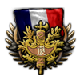
帝国联邦就此成立，确保大英帝国确实能够经受时间的考验，如温斯顿·丘吉尔曾说过的，延续一千年。 统治吧，不列颠尼亚！！
统治吧，不列颠尼亚！！
注 1： ENG 不会从英属印度或英属马来亚获得核心领土，以体现文化差异（这样做也是为了抵消获得全部印度人力所带来的过强效果，即使是英属印度／印度自己也得不到这些人力）。
注 2： 在使用非史实 AI 扮演君主主义英国时，即使帝国会议成功，英国也有可能无法获得南非的核心领土。截至 1.10.3 补丁，英国要被授予南非核心领土，需要南非已完成国策「温得和克警察」。若南非的「支持绥靖政策」焦点未能在 1936 年各自治领与王室决裂之前完成，「温得和克警察」焦点就会被封锁，使英国无法通过帝国联邦获得南非的核心领土。（若启用史实 AI，请在各自治领脱离之前选取「支持绥靖政策」和「温得和克警察」，以避免此问题。）


| 意识形态 | 国家名称 |
|---|---|
| 英联邦 | |
| 各族人民联邦 | |
| 该帝国 | |
| 帝国联邦 |
法兰克-西班牙王国
法兰克-西班牙王国是 法国与西班牙之间的君主制联合，可由法国
法国与西班牙之间的君主制联合，可由法国 在走正统派君主主义路线并完成国策「合并王冠」后成立。
在走正统派君主主义路线并完成国策「合并王冠」后成立。


请注意，如果西班牙在 葡萄牙成立葡萄牙-巴西联合王国之后与其组建了伊比利亚联盟，法国也将获得所有葡萄牙与巴西州的核心领土，从而造就一个在人口、工业和潜在军事实力上可与欧洲联盟或帝国联邦相媲美的帝国。
葡萄牙成立葡萄牙-巴西联合王国之后与其组建了伊比利亚联盟，法国也将获得所有葡萄牙与巴西州的核心领土，从而造就一个在人口、工业和潜在军事实力上可与欧洲联盟或帝国联邦相媲美的帝国。


关于「合并王冠」焦点运作方式的技术解释：它为每个 SPB 核心州给予 法国核心领土。SPB 只在
法国核心领土。SPB 只在 国民西班牙完成焦点「清除卡洛斯派」、导致卡洛斯派脱离时出现。若国民西班牙
国民西班牙完成焦点「清除卡洛斯派」、导致卡洛斯派脱离时出现。若国民西班牙 完成了焦点「在卡洛斯派理念上绝不妥协」，其外观标签会变为卡洛斯派西班牙，但其标签不仍是 SPB（标签保持为
完成了焦点「在卡洛斯派理念上绝不妥协」，其外观标签会变为卡洛斯派西班牙，但其标签不仍是 SPB（标签保持为 SPA或SPR
SPA或SPR ），因此法国无法继承它的全部核心领土（在这种情况下，即使卡洛斯派西班牙成立了伊比利亚，法国也只能获得原西班牙各州的核心领土）。
），因此法国无法继承它的全部核心领土（在这种情况下，即使卡洛斯派西班牙成立了伊比利亚，法国也只能获得原西班牙各州的核心领土）。


| 意识形态 | 国家名称 |
|---|---|
| 法兰克-西班牙联邦共和国 | |
| 法兰克-西班牙人民共和国 | |
| 法兰克-西班牙帝国 | |
| 法兰克-西班牙王国 |
利沃尼亚王国
利沃尼亚王国是一个可成立国家，可以由 立陶宛作为国策树君主主义分支的一部分创建，实际上是波罗的海联邦的替代版本，只是立陶宛专属。
立陶宛作为国策树君主主义分支的一部分创建，实际上是波罗的海联邦的替代版本，只是立陶宛专属。

从历史上看，它是该地区曾以利沃尼亚之名存在的诸多不同政体的延续，其谱系一直可追溯到中世纪早期的利沃尼亚部落，即该地区被基督教化之前。更具体地说，利沃尼亚王国最可能是利沃尼亚公国（存在于 1561 年至 1621 年）或最初的利沃尼亚王国（存在于 1570 年至 1578 年）的复辟，也可以被理解为与 1620 年代至 1918 年间在瑞典、波兰以及后来俄罗斯统治下存在的一系列利沃尼亚总督辖区有关。
在拥立卡尔·格罗·冯·乌拉赫以明道加斯三世的王号成为立陶宛国王后，立陶宛便可以接着通过国策树中的国策「宣称利沃尼亚」来索要利沃尼亚的土地（包括 爱沙尼亚和拉脱维亚
爱沙尼亚和拉脱维亚 ）。这将使立陶宛变为利沃尼亚王国，除改变国旗和地图颜色外，还会获得爱沙尼亚与拉脱维亚全部领土的核心领土，并且顺带获得对这两个国家的征服战争目标。后续一个名为「波兰王国」的焦点允许利沃尼亚也索取波兰的王位，并促成两国重新统一（援引波兰-立陶宛联邦）。若波兰拒绝该提议，但国内君主主义支持度足够高，政府与保皇派之间将爆发内战，若后者获胜，波兰将加入利沃尼亚（波兰会成为利沃尼亚王国的傀儡国，并改换地图颜色以与利沃尼亚一致）。
）。这将使立陶宛变为利沃尼亚王国，除改变国旗和地图颜色外，还会获得爱沙尼亚与拉脱维亚全部领土的核心领土，并且顺带获得对这两个国家的征服战争目标。后续一个名为「波兰王国」的焦点允许利沃尼亚也索取波兰的王位，并促成两国重新统一（援引波兰-立陶宛联邦）。若波兰拒绝该提议，但国内君主主义支持度足够高，政府与保皇派之间将爆发内战，若后者获胜，波兰将加入利沃尼亚（波兰会成为利沃尼亚王国的傀儡国，并改换地图颜色以与利沃尼亚一致）。


| 意识形态 | 国家名称 |
|---|---|
| 利沃尼亚联合共和国 | |
| 利沃尼亚社会主义共和国 | |
| 玛利亚之地 | |
| 利沃尼亚王国 |
波兰-罗马尼亚王国
波兰-罗马尼亚王国是可以建立的另一个君主制联合，在这里是 波兰与罗马尼亚
波兰与罗马尼亚 之间的联合。
之间的联合。
在历史上，波兰王国以各种形态存在，最早可追溯到公元 1025 年，直到 1795 年灭亡。该王国曾以半自治政体波兰会议王国的形式在一定程度上得到恢复，存在于 1815 年至 1867 年，并在 1830—1831 年十一月起义与 1864 年一月起义期间有过一次真正的复国尝试。此后，波兰的自治被严重削减，波兰王国从此大多只是形式上的存在，仅停留在纸面上。1917 年俄罗斯帝国崩溃后，波兰王国由德意志帝国重新建立，并成立了摄政委员会，其任务是选出国王填补空悬的王位。这最终未能实现，因为德国被协约国击败，并于 1918 年 11 月 11 日签署停战协定。新成立的波兰王国摄政委员会未能在约瑟夫·毕苏斯基元帅宣布 波兰第二共和国之前加冕国王，而这一体制在 1936 年依然存在。
波兰第二共和国之前加冕国王，而这一体制在 1936 年依然存在。
不过，波兰的君主主义也许还没有彻底消亡，波兰可以选择履行《11 月 5 日法案》——这是同盟国作出的承诺，要从俄罗斯帝国的被占领土中释放出一个波兰王国。一旦摄政会议重新组建，就可以从三位王位觊觎者中挑选一位：霍亨索伦家族（罗马尼亚的米哈伊二世）、联邦派觊觎者（韦廷家族的弗里德里希·克里斯蒂安），以及哥萨克国王（帕维尔·别尔蒙德特-阿瓦洛夫，一位军阀、哥萨克和格鲁吉亚亲王）。
在这些选项中，联邦派王位主张者（韦廷家族的弗里德里希·克里斯蒂安）将允许波兰寻求恢复波兰立陶宛联邦，而霍亨索伦家族（罗马尼亚的米哈伊二世）则会开启成立波兰-罗马尼亚王国的道路。在第二次世界大战爆发前的那段时间里，波兰与罗马尼亚关系密切；在王位空悬的情况下，波兰可以通过选出一位罗马尼亚国王把两国关系提升到新的高度。由此，在适当的情况下两国可以合并为一个王国：或出于波兰的压力，或因为罗马尼亚完成了国策 King Michael's Coup。波兰与罗马尼亚合并为一个王国后，波兰-罗马尼亚可以或与盟国结盟，或任命王室独裁统治，并通过恢复波兰-匈牙利联合来征服 斯洛伐克和匈牙利，以寻求进一步扩张。一旦完全实现，波兰-罗马尼亚王国将在轴心国与共产国际之间筑起一道坚固的壁障，扮演类似晚期波兰立陶宛联邦与奥匈帝国的角色——一个作为该地区稳定守护者的君主制联合国家。
斯洛伐克和匈牙利，以寻求进一步扩张。一旦完全实现，波兰-罗马尼亚王国将在轴心国与共产国际之间筑起一道坚固的壁障，扮演类似晚期波兰立陶宛联邦与奥匈帝国的角色——一个作为该地区稳定守护者的君主制联合国家。


| 意识形态 | 国家名称 |
|---|---|
| 波兰-罗马尼亚联邦 | |
| 波兰-罗马尼亚人民共和国 | |
| Poland-Romania | |
| 波兰-罗马尼亚王国 |
马其顿帝国
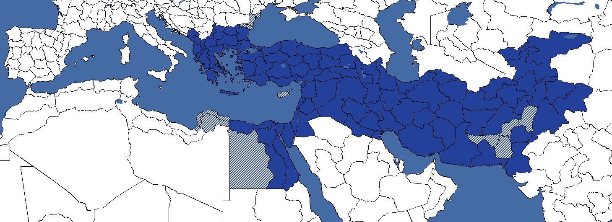
马其顿帝国是亚历山大大帝帝国的重建，其疆域从希腊一直延伸到印度，形成于他公元前 336—323 年的统治时期，并在亚历山大死后几乎立刻分崩离析。作为 希腊，它可以由法西斯主义
希腊，它可以由法西斯主义 领袖乔治·梅尔库里斯通过焦点「塑造世界新秩序」成立，也可以由Monarchist领袖
领袖乔治·梅尔库里斯通过焦点「塑造世界新秩序」成立，也可以由Monarchist领袖 乔治二世通过焦点「地中海守护者」成立。
乔治二世通过焦点「地中海守护者」成立。


| 意识形态 | 国家名称 |
|---|---|
| 大马其顿大共和国 | |
| 阿尔戈斯共同体 | |
| 马其顿帝国 | |
| 马其顿国 |
北高加索山区共和国
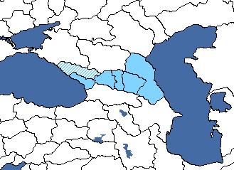
若 苏联因故解体，那么北高加索的某个可释放继承国便可决定收拾这个陨落联盟的残局，通过成立统一的北高加索山民共和国来挽救尚可挽救之物，以防高加索以北的土地落入外国势力影响之下。该国之名取自短暂存在过的北高加索山民共和国。要成立北高加索，必须控制苏联
苏联因故解体，那么北高加索的某个可释放继承国便可决定收拾这个陨落联盟的残局，通过成立统一的北高加索山民共和国来挽救尚可挽救之物，以防高加索以北的土地落入外国势力影响之下。该国之名取自短暂存在过的北高加索山民共和国。要成立北高加索，必须控制苏联 境内顿河与高加索之间的大部分地区。
境内顿河与高加索之间的大部分地区。
| 意识形态 | 国家名称 | 国家名称（苏联傀儡国） |
|---|---|---|
| 北高加索山区共和国 | ||
| 北高加索山民人民共和国 | 山地自治苏维埃社会主义共和国 | |
| 北高加索民族联盟 | ||
| 北高加索埃米尔国 |
北欧联盟
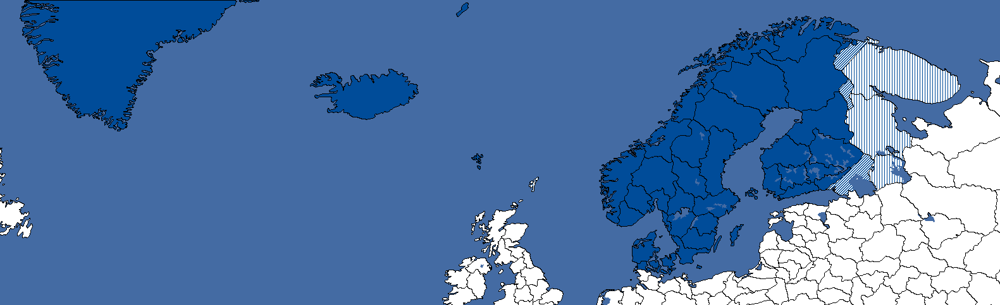
北欧联盟是斯堪的纳维亚的扩展版本，代表着所有北欧国家的更大联合，其中还包括 芬兰和冰岛
芬兰和冰岛 。若作此选择，则无法成立北海联邦和波罗的海自治领。
。若作此选择，则无法成立北海联邦和波罗的海自治领。


成立国必须是北欧国家之一（ 挪威、丹麦
挪威、丹麦 、瑞典、
、瑞典、 芬兰或冰岛
芬兰或冰岛 ），并要求上述所有国家统一在同一面旗帜下。此外，若爱沙尼亚完成焦点「爱沙尼亚即斯堪的纳维亚」，该决议也会对爱沙尼亚开放，尽管它不需要任何额外核心领土。
），并要求上述所有国家统一在同一面旗帜下。此外，若爱沙尼亚完成焦点「爱沙尼亚即斯堪的纳维亚」，该决议也会对爱沙尼亚开放，尽管它不需要任何额外核心领土。
| 意识形态 | 国家名称 |
|---|---|
| 北欧理事会 | |
| 北欧社会主义国家 | |
| 北欧帝国 | |
| 北欧联盟 |
北欧防务委员会
该国可由 瑞典通过瑞典焦点「集中化北欧军事指挥」，在把重心放在旧敌身上之后成立前述北欧防务委员会来建立。
瑞典通过瑞典焦点「集中化北欧军事指挥」，在把重心放在旧敌身上之后成立前述北欧防务委员会来建立。
| 意识形态 | 国家名称 |
|---|---|
| 北欧防务委员会 | |
| 北欧防务委员会 | |
| 北欧防务委员会 | |
| 北欧防务委员会 |
北方革命阵线与挪威苏维埃共和国
北方革命阵线
该国可通过 挪威的共产主义焦点分支成立。历史上，列夫·托洛茨基在挪威流亡了一年多，直到 1936 年 12 月被驱逐到墨西哥。北方革命阵线代表的不是像历史上那样驱逐托洛茨基、也不是遵循苏维埃联盟诸国
挪威的共产主义焦点分支成立。历史上，列夫·托洛茨基在挪威流亡了一年多，直到 1936 年 12 月被驱逐到墨西哥。北方革命阵线代表的不是像历史上那样驱逐托洛茨基、也不是遵循苏维埃联盟诸国 的共产主义意识形态，而是一个彻底拥抱托洛茨基理念并建立新共产主义国际的国家。
的共产主义意识形态，而是一个彻底拥抱托洛茨基理念并建立新共产主义国际的国家。
要成立北方革命阵线，玩家需要走共产主义路线 Prosecute the NKP，并让托洛茨基在政府中占有一席之地。玩家可在游戏第一年内通过一个事件做到这一点。然而，如果苏联走上了涉及托洛茨基的左翼反对派架空历史焦点路线，那么这一事件就不会对挪威触发。当托洛茨基被给予政府职位后，焦点 A New Norway 将成立北方革命阵线，并改变该国的颜色、名称与国旗。
挪威苏维埃共和国
| 意识形态 | 国家名称 | Stalinist |
|---|---|---|
| 挪威 | ||
| 北方革命阵线 | 挪威苏维埃共和国 | |
| 挪威民族政府 | ||
| 挪威王国 |
北海联邦
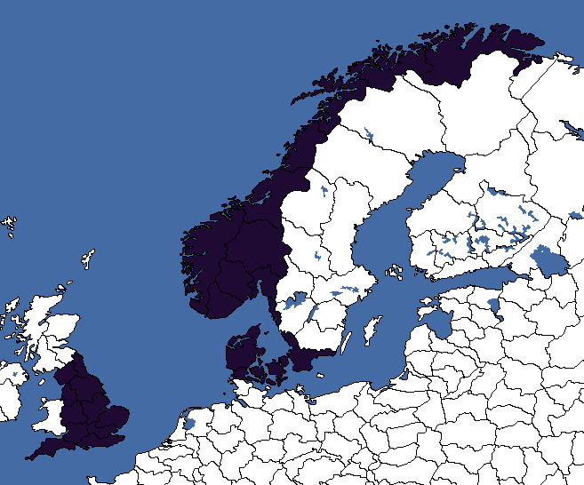
北海联邦是一个可成立国家，包括 挪威、丹麦
挪威、丹麦 本土、瑞典和
本土、瑞典和 England的部分地区。它可以由丹麦
England的部分地区。它可以由丹麦 或挪威成立，是北海帝国的天然继承者——在维京时代末期的 1013 年至 1042 年的大部分时间里，北海帝国由克努特大帝领导。成立北海联邦最容易的方式是作为
或挪威成立，是北海帝国的天然继承者——在维京时代末期的 1013 年至 1042 年的大部分时间里，北海帝国由克努特大帝领导。成立北海联邦最容易的方式是作为 丹麦统一右翼。此后你可以选择走君主主义路线或法西斯主义路线，最终通过焦点「丹麦法区」获得对英国
丹麦统一右翼。此后你可以选择走君主主义路线或法西斯主义路线，最终通过焦点「丹麦法区」获得对英国 的吞并战争目标。若作此选择，则无法成立北欧联盟和波罗的海自治领。
的吞并战争目标。若作此选择，则无法成立北欧联盟和波罗的海自治领。


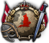
成立时，该国颜色变为深紫色。
| 意识形态 | 国家名称 |
|---|---|
| 北海联邦 | |
| 北海各族人民联合共和国 | |
| 北海帝国 | |
| 北海王国 |
东方总督辖区
- 不可与东方总督辖区混为一谈，那是德国可成立的一个傀儡国。

东方总督辖区可作为 拉脱维亚法西斯路线的一部分使用；就可成立国家而言，它是个异类，因为它是德国发明的一个人为国家，拉脱维亚可以为一己私利与好处而建立它。
拉脱维亚法西斯路线的一部分使用；就可成立国家而言，它是个异类，因为它是德国发明的一个人为国家，拉脱维亚可以为一己私利与好处而建立它。

要成立东方总督辖区，拉脱维亚必须选取国策「拉脱维亚人的拉脱维亚」，开始沿法西斯路线推进。从这里，他们可以拉拢法西斯组织雷霆十字及其领袖古斯塔夫斯·切尔明什。然而这是一场微妙的平衡：若雷霆十字发展得太快太强，他们会试图推翻政府，导致整个计划自我崩塌并爆发内战。一旦古斯塔夫斯·切尔明什和雷霆十字掌权——无论是否通过和平手段——他们可以选择做一件非常奇怪的事：与 德国站在一起，接过东方总督辖区（Reichskommissariat Ostland）的名号，通过占领波罗的海、白俄罗斯以及或许更远的地区来侍奉其德国主人。这相当奇怪，因为其实质是拉脱维亚利用德国对该地区的图谋与野心，作为忠诚的回报为自己建立一个国家；等于把古斯塔夫斯·切尔明什和雷霆十字塑造成东欧的吉斯林。话虽如此，拉脱维亚确实得以保持独立，而不是成为德国的傀儡国，这就为它建立自己的傀儡国以进一步扩张东方总督辖区的疆域、并在日后摆脱德国成为完全主权国家（类似维希法国）提供了可能，使东方总督辖区从一个纯粹的总督辖区和人为发明演变为无可争议的现实与名副其实的合法国家。
德国站在一起，接过东方总督辖区（Reichskommissariat Ostland）的名号，通过占领波罗的海、白俄罗斯以及或许更远的地区来侍奉其德国主人。这相当奇怪，因为其实质是拉脱维亚利用德国对该地区的图谋与野心，作为忠诚的回报为自己建立一个国家；等于把古斯塔夫斯·切尔明什和雷霆十字塑造成东欧的吉斯林。话虽如此，拉脱维亚确实得以保持独立，而不是成为德国的傀儡国，这就为它建立自己的傀儡国以进一步扩张东方总督辖区的疆域、并在日后摆脱德国成为完全主权国家（类似维希法国）提供了可能，使东方总督辖区从一个纯粹的总督辖区和人为发明演变为无可争议的现实与名副其实的合法国家。

| 意识形态 | 国家名称 |
|---|---|
| 波罗的海-白俄罗斯共和国 | |
| 波罗的海-白俄罗斯社会主义共和国 | |
| 东方总督辖区 | |
| 东方总督辖区 |
泛斯拉夫联盟
- 不可与斯拉夫联盟混为一谈，那是波兰可用的一个可成立国家
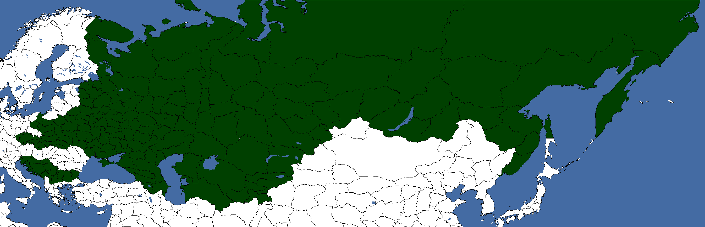
泛斯拉夫联盟是一个可成立国家，可以以 苏联的身份走「虽败未溃」焦点路线成立。在第二次俄罗斯内战成功并选择君主主义或法西斯主义路线之后，该国可以执行焦点「泛斯拉夫民族主义」。
苏联的身份走「虽败未溃」焦点路线成立。在第二次俄罗斯内战成功并选择君主主义或法西斯主义路线之后，该国可以执行焦点「泛斯拉夫民族主义」。 Russia会获得吞并捷克斯洛伐克、波兰
Russia会获得吞并捷克斯洛伐克、波兰 、南斯拉夫和
、南斯拉夫和 保加利亚的事件。整合这四个国家并成立泛斯拉夫联盟后，Russia
保加利亚的事件。整合这四个国家并成立泛斯拉夫联盟后，Russia 仍然可以与英国和法国组建三国协约，或者与
仍然可以与英国和法国组建三国协约，或者与 德意志国乃至可能还有日本
德意志国乃至可能还有日本 一同加入轴心国。
一同加入轴心国。


完成上述决议后，便可宣告成立泛斯拉夫联盟。
| 意识形态 | 国家名称 |
|---|---|
| 泛斯拉夫联盟 | |
| 泛斯拉夫联盟 | |
| 泛斯拉夫联盟 | |
| 泛斯拉夫联盟 |
波兰-立陶宛联邦
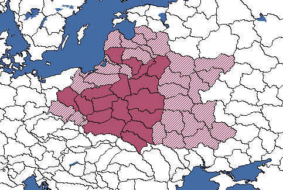
波兰-立陶宛联邦是一个可成立国家，代表着 1569 年至 1795 年间存在的联邦，它在 1795 年被俄罗斯、普鲁士和奥地利帝国瓜分。只有 波兰和立陶宛
波兰和立陶宛 可以成立波兰-立陶宛联邦。若波兰分别走哥萨克国王路线或罗曼诺夫路线，它可以成立别尔蒙德特联邦或国会联邦。它使用与常规的“重建联邦”决议相同的决议，但波兰会保留其白色。
可以成立波兰-立陶宛联邦。若波兰分别走哥萨克国王路线或罗曼诺夫路线，它可以成立别尔蒙德特联邦或国会联邦。它使用与常规的“重建联邦”决议相同的决议，但波兰会保留其白色。


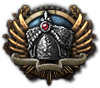
| 意识形态 | 国家名称 |
|---|---|
| 波兰-立陶宛联邦（共和制） | |
| 社会主义共和国联邦 | |
| 波兰-立陶宛帝国 | |
| 波兰-立陶宛联邦 |
如果 波兰走哥萨克国王或罗曼诺夫子分支，则可使用以下国家名称：
波兰走哥萨克国王或罗曼诺夫子分支，则可使用以下国家名称：
| 意识形态 | 国家名称 |
|---|---|
| 国会联邦 | |
| 国会联邦 | |
| 别尔蒙德特联邦 | |
| 国会联邦 |
启用 一步不退 DLC 后，联邦也可以通过国策由波兰或立陶宛成立，只要选择了相应的君主主义路线。以这种方式成立只需要让另一国成为你的附庸国，这比获得 80% 顺从度容易得多。
一步不退 DLC 后，联邦也可以通过国策由波兰或立陶宛成立，只要选择了相应的君主主义路线。以这种方式成立只需要让另一国成为你的附庸国，这比获得 80% 顺从度容易得多。
以这种方式成立联邦后，会解锁更多国策来进一步扩张联邦。以立陶宛开局时，「宣称利沃尼亚」焦点会给予爱沙尼亚的核心领土，而若以波兰成立联邦则无法获得这些。焦点「大联邦」对两者都可用，它要求从德国和苏联手中征服大片土地，甚至超出联邦历史上曾控制的范围。完成该焦点将授予奥得河以东全部德国土地、整个乌克兰和白俄罗斯、克里米亚，以及莫斯科西南的若干俄罗斯州的核心领土。南比萨拉比亚也会被转为核心领土，但并非成立所必需。游戏开始时，所有可用的波兰-立陶宛核心领土的人口合计略低于 9500 万。
社会主义共和国联邦是联邦的一个变体，只能由共产主义波兰通过「组织农民罢工」国策树，经由「组建左翼内阁」一路向下到焦点「社会主义共和国联邦」来成立。除标准的联邦核心领土外，社会主义共和国联邦还会把 Estonian
Estonian 各州转为核心领土。
各州转为核心领土。


无法通过各自焦点分支成立联邦的波兰变体（例如波兰-罗马尼亚王国），若拥有顺从度超过 80% 的 Lithuanian各州，就可以通过“重建联邦”决议来成立，将名称、国旗和颜色改为波兰-立陶宛联邦，并获得其全部核心领土。
Lithuanian各州，就可以通过“重建联邦”决议来成立，将名称、国旗和颜色改为波兰-立陶宛联邦，并获得其全部核心领土。

罗马帝国
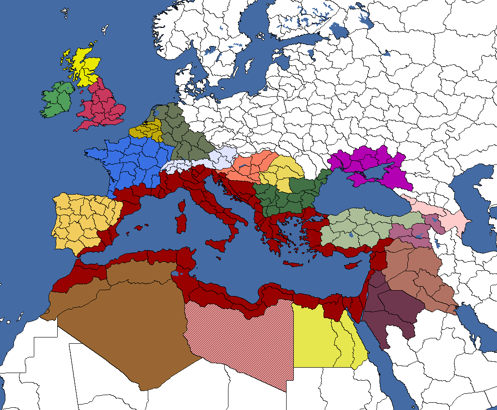
罗马帝国代表着法西斯 意大利最大的野心，或许也是欧洲已知最强盛的帝国。它的诞生是一个漫长进程的一部分：始于公元前 509 年罗马王国被罗马共和国取代，此后罗马共和国相继征服了整个意大利、法国、希腊、伊比利亚、低地国家，以及安纳托利亚和北非的部分地区，直到公元前 27 年罗马共和国变为罗马帝国。此后，罗马帝国继续征服了整个英格兰与威尔士、埃及、整个巴尔干、安纳托利亚其余地区、整个黎凡特、美索不达米亚的大片地区，并把罗马的边界一步步推向欧洲中部与东部内陆。罗马帝国一直存在到公元 395 年，那一年它分裂为西罗马帝国与东罗马帝国。西罗马帝国于公元 476 年崩溃，而东罗马帝国（又称拜占庭，可由希腊
意大利最大的野心，或许也是欧洲已知最强盛的帝国。它的诞生是一个漫长进程的一部分：始于公元前 509 年罗马王国被罗马共和国取代，此后罗马共和国相继征服了整个意大利、法国、希腊、伊比利亚、低地国家，以及安纳托利亚和北非的部分地区，直到公元前 27 年罗马共和国变为罗马帝国。此后，罗马帝国继续征服了整个英格兰与威尔士、埃及、整个巴尔干、安纳托利亚其余地区、整个黎凡特、美索不达米亚的大片地区，并把罗马的边界一步步推向欧洲中部与东部内陆。罗马帝国一直存在到公元 395 年，那一年它分裂为西罗马帝国与东罗马帝国。西罗马帝国于公元 476 年崩溃，而东罗马帝国（又称拜占庭，可由希腊 建立）则继续存在，直到 1453 年灭亡。拜占庭帝国（进而言之即罗马帝国）最后的残余在 1461—1475 年间被彻底消灭。
建立）则继续存在，直到 1453 年灭亡。拜占庭帝国（进而言之即罗马帝国）最后的残余在 1461—1475 年间被彻底消灭。

一旦“实现罗马的野心”决议被颁布、罗马帝国成立， 意大利将把名称改为“Imperium Romanum”，把颜色改为猩红色，并采用一面罗马帝国旗帜。与此同时，上述所有领土都将成为意大利（罗马）核心。如果新罗马帝国成立时掌权者是贝尼托·墨索里尼、维托里奥·埃马努埃莱三世或翁贝托二世，他们的名字将分别改为“奥古斯都·墨索里尼”“奥古斯都·维托里奥·埃马努埃莱”或“奥古斯都·翁贝托”，其肖像也会换成戴着金色月桂花冠的版本。
意大利将把名称改为“Imperium Romanum”，把颜色改为猩红色，并采用一面罗马帝国旗帜。与此同时，上述所有领土都将成为意大利（罗马）核心。如果新罗马帝国成立时掌权者是贝尼托·墨索里尼、维托里奥·埃马努埃莱三世或翁贝托二世，他们的名字将分别改为“奥古斯都·墨索里尼”“奥古斯都·维托里奥·埃马努埃莱”或“奥古斯都·翁贝托”，其肖像也会换成戴着金色月桂花冠的版本。
罗马帝国成立后，以下决议将变为可用。这些决议会给予罗马帝国所需各州的核心领土，但会消耗 政治点数和稳定度。
政治点数和稳定度。


博斯普鲁斯王国将与罗马帝国属于同一政党。

| 意识形态 | 国家名称 |
|---|---|
| 博斯普鲁斯共和国（拉丁语名） | |
| 博斯普鲁斯无产阶级公社 | |
| Regnum Bospori（博斯普鲁斯王国） | |
| Regnum Bospori（博斯普鲁斯王国） |
| 意识形态 | 国家名称 |
|---|---|
| 罗马共和国（拉丁语名） | |
| 罗马无产阶级公社 | |
| 罗马帝国 | |
| Regnum Romanum（罗马王国） |
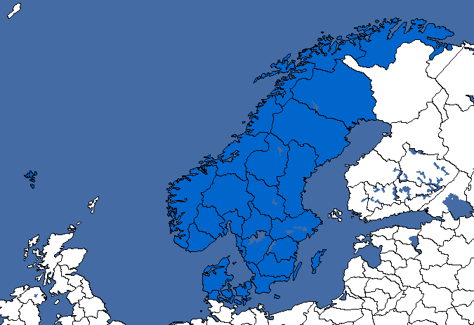
 斯堪的纳维亚代表中世纪的卡尔马联盟，即丹麦、挪威和瑞典之间的联合国家，它存在于 1397—1523 年。
斯堪的纳维亚代表中世纪的卡尔马联盟，即丹麦、挪威和瑞典之间的联合国家，它存在于 1397—1523 年。
 丹麦是历史上的创始国，因为在卡尔马联盟时代，瑞典
丹麦是历史上的创始国，因为在卡尔马联盟时代，瑞典 和挪威都是丹麦的附庸（共主邦联），这一点在《欧陆风云 4》中体现得尤为明显。成立斯堪的纳维亚之后，仍可成立北欧联盟、北海联邦和波罗的海自治领。
和挪威都是丹麦的附庸（共主邦联），这一点在《欧陆风云 4》中体现得尤为明显。成立斯堪的纳维亚之后，仍可成立北欧联盟、北海联邦和波罗的海自治领。


这样做之后，这些州会变为核心领土，该国还会获得蓝色。
| 意识形态 | 国家名称 |
|---|---|
| Scandinavia | |
| 斯堪的纳维亚社会主义国 | |
| 斯堪的纳维亚帝国 | |
| 斯堪的纳维亚王国 |
斯拉夫联盟
- 不可与泛斯拉夫联盟混为一谈，那是俄罗斯可用的一个可成立国家
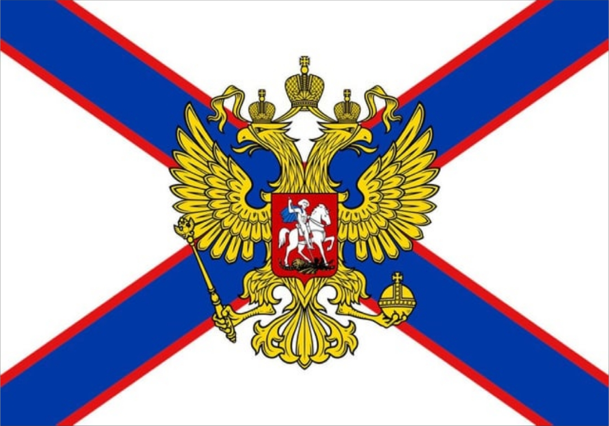
斯拉夫联盟是一个可成立国家，可以在 召集摄政会议分支中选择阿纳斯塔西娅·罗曼诺娃为国王，并走罗曼诺夫子路线，以波兰的身份来成立。该路线提供吞并
召集摄政会议分支中选择阿纳斯塔西娅·罗曼诺娃为国王，并走罗曼诺夫子路线，以波兰的身份来成立。该路线提供吞并 南斯拉夫的焦点，以及对捷克斯洛伐克
南斯拉夫的焦点，以及对捷克斯洛伐克 和苏联的“吞并”战争目标。
和苏联的“吞并”战争目标。 波兰仍然可以成立该联邦
波兰仍然可以成立该联邦 ，并可使用相关焦点，从而获得立陶宛和拉脱维亚的核心领土。建议在「宣告斯拉夫统一」之前先完成「恢复联邦」焦点，否则埃尔姆兰-马祖里和柯尼斯堡的核心领土将会丢失。
，并可使用相关焦点，从而获得立陶宛和拉脱维亚的核心领土。建议在「宣告斯拉夫统一」之前先完成「恢复联邦」焦点，否则埃尔姆兰-马祖里和柯尼斯堡的核心领土将会丢失。


| 意识形态 | 国家名称 |
|---|---|
| 斯拉夫共和国 | |
| 斯拉夫苏维埃联合共和国 | |
| 斯拉夫帝国 | |
| 斯拉夫联盟 |
瑞士诸保护国
本节涵盖所有需要你成为某一特定国家傀儡国的 瑞士可成立国家。这些可成立国家中你所傀儡依附的国家如下：法国
瑞士可成立国家。这些可成立国家中你所傀儡依附的国家如下：法国 、德国、意大利、
、德国、意大利、 苏联和英国
苏联和英国 。
。

第一批化身是在 法西斯主义分支中可以成立的。沿国策树右侧向下推进，直到「成为德国傀儡」（名称会随你要成为哪个国家的傀儡而变化）。在普通游戏中，你最可能成为德国傀儡并成立瑞士帝国保护国。若德国不再是法西斯主义，该焦点随后会检查
法西斯主义分支中可以成立的。沿国策树右侧向下推进，直到「成为德国傀儡」（名称会随你要成为哪个国家的傀儡而变化）。在普通游戏中，你最可能成为德国傀儡并成立瑞士帝国保护国。若德国不再是法西斯主义，该焦点随后会检查 意大利是否为法西斯主义，若是则成为意大利语瑞士保护国。若两者都不是法西斯主义，则会接着看
意大利是否为法西斯主义，若是则成为意大利语瑞士保护国。若两者都不是法西斯主义，则会接着看 法国，若该国是法西斯主义，则在法国接受你的傀儡化提议时成立海尔维希亚国。最后，若英国
法国，若该国是法西斯主义，则在法国接受你的傀儡化提议时成立海尔维希亚国。最后，若英国 是法西斯主义，你就会成立英国阿尔卑斯领地。
是法西斯主义，你就会成立英国阿尔卑斯领地。


民主制化身
其他化身是在这些国家成为 民主主义时成立的。国策树的左侧允许你「加入法国」，然后完成焦点「第二海尔维希亚共和国」，从而成立海尔维希亚共和国作为法国的傀儡国。
民主主义时成立的。国策树的左侧允许你「加入法国」，然后完成焦点「第二海尔维希亚共和国」，从而成立海尔维希亚共和国作为法国的傀儡国。


共产主义化身
 瑞士联盟可以通过成为苏联的傀儡国来成立。
瑞士联盟可以通过成为苏联的傀儡国来成立。
| 意识形态 | 国家名称 | 民主制化身（单数） |
|---|---|---|
| 瑞士帝国保护国 | 瑞士联邦 | |
| 瑞士帝国保护国 | 瑞士联邦 | |
| 瑞士帝国保护国 | 瑞士联邦 | |
| 瑞士帝国保护国 | 瑞士联邦 |
| 意识形态 | 国家名称 | 民主制化身（单数） |
|---|---|---|
| 意大利语瑞士保护国 | 瑞士共和国（意大利语名） | |
| 意大利语瑞士保护国 | 瑞士共和国（意大利语名） | |
| 意大利语瑞士保护国 | 瑞士共和国（意大利语名） | |
| 意大利语瑞士保护国 | 瑞士共和国（意大利语名） |
| 意识形态 | 国家名称 | 民主制化身（单数） |
|---|---|---|
| 海尔维希亚国（法语名） | 海尔维希亚共和国（法语名） | |
| 海尔维希亚国（法语名） | 海尔维希亚共和国（法语名） | |
| 海尔维希亚国（法语名） | 海尔维希亚共和国（法语名） | |
| 海尔维希亚国（法语名） | 海尔维希亚共和国（法语名） |
| 意识形态 | 国家名称 | 民主制化身（单数） |
|---|---|---|
| 英国阿尔卑斯领地 | 阿尔卑斯领地 | |
| 英国阿尔卑斯领地 | 阿尔卑斯领地 | |
| 英国阿尔卑斯领地 | 阿尔卑斯领地 | |
| 英国阿尔卑斯领地 | 阿尔卑斯领地 |
| 意识形态 | 国家名称 |
|---|---|
| 瑞士联盟 | |
| 瑞士联盟 | |
| 瑞士联盟 | |
| 瑞士联盟 |
新秩序与北方之地帝国保护国
这两个可成立国家都可以通过 瑞典的路线获得，在这条路线中瑞典自愿成为德意志国
瑞典的路线获得，在这条路线中瑞典自愿成为德意志国 的傀儡国。在这条路线的末端，玩家可以选择反叛并挣脱束缚，成为独立的法西斯国家新秩序，或者忠于其宗主国并成为北方之地帝国保护国。
的傀儡国。在这条路线的末端，玩家可以选择反叛并挣脱束缚，成为独立的法西斯国家新秩序，或者忠于其宗主国并成为北方之地帝国保护国。
要成立这两个国家中的任何一个，玩家首先需要沿法西斯子分支推进，从焦点「派代表团前往柏林」开始。该焦点会引发内战，并把玩家变为德国的傀儡国，称为瑞典帝国保护国。在这条路线的末端，玩家将面临一个关于瑞典未来的互斥选择。

如果玩家希望宣布独立并成立新秩序，就需要在该焦点分支末端完成焦点「新秩序」。这会使玩家独立，为国家添加重型坦克科技，并且若已完成焦点「迈向瑞典帝国」，还会让他们从其宗主国当前参与的所有战争中白和退出。德国也会因这场叛乱获得对新秩序的战争目标。

如果玩家希望作为傀儡国继续忠于其宗主国，就需要在该焦点分支末端完成焦点「北方之地帝国保护国」。该焦点将给予新成立的北方之地帝国保护国对北欧东北部土地的宣称。此外，若这片土地由其宗主国控制，它将被移交给北方之地帝国保护国。
| 意识形态 | 国家名称 |
|---|---|
| 新秩序 | |
| 新秩序 | |
| 新秩序 | |
| 新秩序 |
| 意识形态 | 国家名称 |
|---|---|
| 北方之地帝国总督辖区 | |
| 北方之地帝国总督辖区 | |
| 北方之地帝国总督辖区 | |
| 北方之地帝国总督辖区 |
第三保加利亚帝国
第三保加利亚帝国是 保加利亚在第一次和第二次世界大战期间试图建立的更大国家。从历史上看，它代表保加利亚帝国的复辟，该帝国存在于 681—1018 年和 1185—1396／1422 年。这两个“保加利亚帝国”通常不被视为彼此独立的实体，而是同一个国家在外国统治时期结束后得到恢复，因此严格说来，第三保加利亚帝国确实就是昔日保加利亚帝国的复辟。
保加利亚在第一次和第二次世界大战期间试图建立的更大国家。从历史上看，它代表保加利亚帝国的复辟，该帝国存在于 681—1018 年和 1185—1396／1422 年。这两个“保加利亚帝国”通常不被视为彼此独立的实体，而是同一个国家在外国统治时期结束后得到恢复，因此严格说来，第三保加利亚帝国确实就是昔日保加利亚帝国的复辟。
| 意识形态 | 国家名称 |
|---|---|
| 保加利亚联邦 | |
| 保加利亚人民共和国 | |
| 第三保加利亚帝国 | |
| 第三保加利亚帝国 |
第三罗马
这个可成立国家可作为 苏联君主制复辟路线的一部分使用，而那条路线相当困难和复杂。
苏联君主制复辟路线的一部分使用，而那条路线相当困难和复杂。
要成立第三罗马，玩家必须首先恢复俄罗斯帝国。通往这一步的旅程始于完成国策「虽败未溃」。从这里，玩家必须开始组织、武装并装备俄罗斯白军流亡者，同时从内部削弱苏联，意图挑起第二次俄罗斯内战，彻底推翻共产主义布尔什维克。这是苏联国策树中最艰难的路线，比任何其他分支都更难，因为苏联相对白军拥有巨大的军事与工业优势。白军必须明智地利用其有限的资源、颠覆活动以及所能获得的一切外国援助，甚至可以尝试邀请 日本直接加入苏联内战，以换取消除其西北方的敌对强国、在太平洋沿岸获得重大领土收益，乃至在其对手崩溃后留下的权力真空中安插一个附庸政权。
日本直接加入苏联内战，以换取消除其西北方的敌对强国、在太平洋沿岸获得重大领土收益，乃至在其对手崩溃后留下的权力真空中安插一个附庸政权。


如果俄罗斯白军流亡者出人意料地取得胜利，1917 年倾覆的俄罗斯帝国将得到恢复，一位新沙皇将在莫斯科加冕。
无论玩家选择俄罗斯帝国国策树中的君主主义分支（罗曼诺夫重建）还是法西斯主义分支（解散缙绅会议），国策树更下方都有一个名为「帝国的合法继承人」的国策，它指向莫斯科、进而指向俄罗斯被视为罗马帝国第三次化身的观念（罗马帝国为第一次，拜占庭为第二次），并给予对三个罗马的宣称（ 意大利的罗马、
意大利的罗马、 土耳其的伊斯坦布尔／君士坦丁堡，以及由
土耳其的伊斯坦布尔／君士坦丁堡，以及由 英国控制的耶路撒冷）。
英国控制的耶路撒冷）。
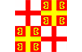
通过强调教会在新国家中的作用，教会与国家可以日益紧密地靠拢，最终将哈尔滨与满洲里的都主教梅列季擢升为莫斯科暨全罗斯的宗主教，同时也成为俄罗斯的沙皇，实际上把俄罗斯变成一个神权国家。与其所宣称的罗马帝国世系相一致，“俄罗斯”这一名称将被完全弃用，国家将直接改名为字面意义上的第三罗马，并且还配有一面新国旗和一种帝国紫的颜色。
| 意识形态 | 国家名称 |
|---|---|
| 第三罗马 | |
| 第三罗马 | |
| 第三罗马 | |
| 第三罗马 |
Transcaucasia
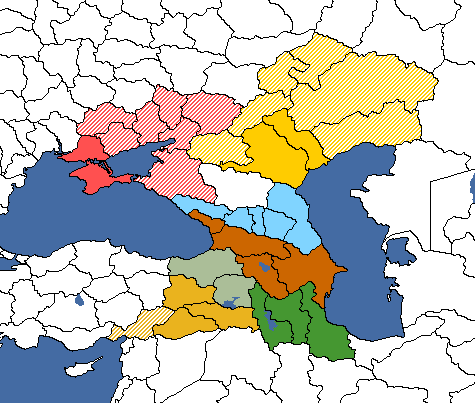
若 苏联因故解体，那么南高加索的某个可释放继承国便可决定收拾这个陨落联盟的残局，通过成立统一的外高加索来挽救尚可挽救之物，以防该地区落入外国势力影响之下。该国可被视为短暂存在过的外高加索民主联邦共和国及其苏联继承者外高加索苏维埃联邦社会主义共和国的复辟。要成立外高加索，必须控制其三个核心成员——格鲁吉亚、亚美尼亚和阿塞拜疆——的土地，它们在游戏开始时均由苏联
苏联因故解体，那么南高加索的某个可释放继承国便可决定收拾这个陨落联盟的残局，通过成立统一的外高加索来挽救尚可挽救之物，以防该地区落入外国势力影响之下。该国可被视为短暂存在过的外高加索民主联邦共和国及其苏联继承者外高加索苏维埃联邦社会主义共和国的复辟。要成立外高加索，必须控制其三个核心成员——格鲁吉亚、亚美尼亚和阿塞拜疆——的土地，它们在游戏开始时均由苏联 统治。成立后，外高加索可以向南扩张进入伊朗和
统治。成立后，外高加索可以向南扩张进入伊朗和 土耳其，以涵盖传统的阿塞拜疆与亚美尼亚人地区，并向北扩张进入北高加索。若控制相关地区，还有额外决议可以建立傀儡库尔德斯坦；而不结盟或法西斯主义的外高加索还有更多决议来释放卡尔梅克汗国与克里米亚汗国的傀儡。
土耳其，以涵盖传统的阿塞拜疆与亚美尼亚人地区，并向北扩张进入北高加索。若控制相关地区，还有额外决议可以建立傀儡库尔德斯坦；而不结盟或法西斯主义的外高加索还有更多决议来释放卡尔梅克汗国与克里米亚汗国的傀儡。


德国治下外高加索卫星国
德国拥有若干决议，可以让他们在格鲁吉亚之下建立一个外高加索卫星国。当德国完成焦点「建立东方大公国」时，这些决议便会解锁。
- Formation
 德国还可以使用更多决议，把这个外高加索卫星国将转为核心领土的北高加索交给它。
德国还可以使用更多决议，把这个外高加索卫星国将转为核心领土的北高加索交给它。
| 意识形态 | 国家名称 | 国家名称（苏联傀儡） |
|---|---|---|
| 外高加索共和国 | ||
| 外高加索联邦社会主义共和国 | 外高加索社会主义联邦苏维埃共和国 | |
| 外高加索极端民族主义国 | ||
| 外高加索王国 |
潘诺尼亚社会主义共和国联盟
 匈牙利可以通过其共产主义焦点分支，走「恢复社会主义联邦共和国」路线来成立潘诺尼亚社会主义共和国联盟。完成焦点「潘诺尼亚社会主义联盟」后，该国的颜色和名称将会改变，玩家还会获得所有潘诺尼亚土地的核心领土。
匈牙利可以通过其共产主义焦点分支，走「恢复社会主义联邦共和国」路线来成立潘诺尼亚社会主义共和国联盟。完成焦点「潘诺尼亚社会主义联盟」后，该国的颜色和名称将会改变，玩家还会获得所有潘诺尼亚土地的核心领土。
该焦点分支还允许匈牙利解锁成立联合巴尔干联邦的决议，这一选项此前为 保加利亚所独有。
保加利亚所独有。
| 意识形态 | 国家名称 |
|---|---|
| 匈牙利共和国 | |
| 潘诺尼亚社会主义共和国联盟 | |
| 匈牙利 | |
| 匈牙利王国 |
联合巴尔干联邦
联合巴尔干联邦是一个可成立国家，可以由 保加利亚通过焦点「巴尔干统一」成立，或（自诸神黄昏
保加利亚通过焦点「巴尔干统一」成立，或（自诸神黄昏 DLC 起）由匈牙利通过焦点「巴尔干野心」成立。
DLC 起）由匈牙利通过焦点「巴尔干野心」成立。

保加利亚之道
成立该国家需要共产主义保加利亚选择焦点 Balkan Federation of Socialist Republics，或民主主义保加利亚选择 A Balkan Confederation。两者都会创建一个阵营，并解锁决议以在所有其他巴尔干国家中增强相应意识形态，目标是通过焦点 Bury the Grudges of the Past 施压它们加入该阵营。一旦至少有一个持相同意识形态的巴尔干国家加入同一阵营，沿国策树继续推进将解锁焦点 The Unification of the Balkans，该焦点将授予保加利亚在欧洲每一个巴尔干州的核心（其中包括 罗马尼亚、
罗马尼亚、 南斯拉夫、
南斯拉夫、 阿尔巴尼亚、
阿尔巴尼亚、 希腊、埃迪尔内和伊斯坦布尔的核心州），把保加利亚的颜色改为深黑色，并向保加利亚阵营中的每一个巴尔干成员发出事件，请求它们与保加利亚统一。一旦接受，它们当前控制的领土将移交给保加利亚，保加利亚将获得该国的全部部队、装备与军事人员，并且保加利亚将加入接受国当时正在进行的所有战争。
希腊、埃迪尔内和伊斯坦布尔的核心州），把保加利亚的颜色改为深黑色，并向保加利亚阵营中的每一个巴尔干成员发出事件，请求它们与保加利亚统一。一旦接受，它们当前控制的领土将移交给保加利亚，保加利亚将获得该国的全部部队、装备与军事人员，并且保加利亚将加入接受国当时正在进行的所有战争。


- 备注
若 土耳其曾在保加利亚的阵营中，保加利亚将不会获得中东任何土耳其州的核心领土。尽管提示框有误导性，保加利亚只有在不处于战争状态、保加利亚为共产主义且土耳其不在保加利亚阵营中时，才会获得一项从土耳其索要埃迪尔内和伊斯坦布尔（以及他们在欧洲可能拥有的其他所有巴尔干州）的决议。不过，若土耳其此前加入了保加利亚的阵营，他们就会像其他国家一样收到同样的吞并事件，并在接受后被完全吸收。
土耳其曾在保加利亚的阵营中，保加利亚将不会获得中东任何土耳其州的核心领土。尽管提示框有误导性，保加利亚只有在不处于战争状态、保加利亚为共产主义且土耳其不在保加利亚阵营中时，才会获得一项从土耳其索要埃迪尔内和伊斯坦布尔（以及他们在欧洲可能拥有的其他所有巴尔干州）的决议。不过，若土耳其此前加入了保加利亚的阵营，他们就会像其他国家一样收到同样的吞并事件，并在接受后被完全吸收。
尽管解锁了在土耳其提升民主主义或共产主义的决议和国家精神，土耳其也不会获得任何改变其意识形态的事件，而凯末尔主义中立以及一个强大的 AI 修正会禁止他们在任何情况下加入保加利亚自己的阵营，除非是同一方的战争。
要让「巴尔干统一」发出吞并事件，保加利亚不必是阵营领袖。只要有一个与保加利亚意识形态相同的巴尔干国家与保加利亚同处一个阵营，该焦点就会被解锁，所有事件也都会触发。
由于 Petorkata 同时启用了巴尔干联邦子分支和贸易政策自由化子分支，因此任何意识形态都可以成立联合巴尔干联邦。然而，无论是提升意识形态的决议还是焦点「埋葬昔日恩怨」都不会考虑到这一点，仍会把保加利亚当作民主主义来对待。此外，名称和国旗也不会改变，因为它们对所有意识形态都相同。

与任何巴尔干国家统一都会合并所有战争，但不会转移任何战争目标。对任何非保加利亚的被吞并国家产生战争目标的焦点，例如「与希腊的战争」，将会取消。
匈牙利之道
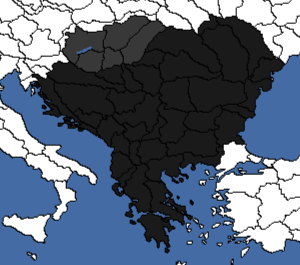
匈牙利可以在结束白色恐怖并点燃内战以建立匈牙利共和国之后成立该国。在焦点「革命委员会中的选举」期间，你需要选择贝拉·库恩作为新的匈牙利领袖，他在共产主义支持度足够高之后会恢复社会主义联邦共和国。此后，你会获得对邻国的战争目标以及所有大匈牙利州的宣称。征服它们并宣告成立潘诺尼亚社会主义共和国联盟之后，你可以选取焦点「巴尔干野心」，它会解锁统一巴尔干的决议。
但与保加利亚的方式相反，你不会获得任何进一步召集支持、傀儡化其他巴尔干国家或整合它们的决议。你只能完全征服它们。
| 意识形态 | 国家名称 |
|---|---|
| 联合巴尔干联邦 | |
| 联合巴尔干联邦 | |
| 联合巴尔干联邦 | |
| 联合巴尔干联邦 |
葡萄牙与巴西联合王国
葡萄牙-巴西联合王国是 抵抗运动 DLC 中引入的一个可成立国家，代表着 1815—1825 年间存在的短命的葡萄牙、巴西和阿尔加维联合王国，尽管它实际上到 1822 年就已解体。
抵抗运动 DLC 中引入的一个可成立国家，代表着 1815—1825 年间存在的短命的葡萄牙、巴西和阿尔加维联合王国，尽管它实际上到 1822 年就已解体。
葡萄牙之道
它可以由 葡萄牙通过「新国家」焦点路线恢复葡萄牙
葡萄牙通过「新国家」焦点路线恢复葡萄牙 和巴西
和巴西 的君主制之后，完成焦点「重新统一的王国」来成立。两国都必须是不结盟且处于和平状态才能成立它。
的君主制之后，完成焦点「重新统一的王国」来成立。两国都必须是不结盟且处于和平状态才能成立它。
该国成立后， 葡萄牙将吞并巴西
葡萄牙将吞并巴西 并把其核心领土给予葡萄牙。这可以与通过「葡热带主义」焦点获得的核心领土一并取得，使该国核心人口总数达到 5200 万。
并把其核心领土给予葡萄牙。这可以与通过「葡热带主义」焦点获得的核心领土一并取得，使该国核心人口总数达到 5200 万。

巴西之道
| 意识形态 | 国家名称 |
|---|---|
| 葡萄牙与巴西联合共和国 | |
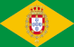 葡萄牙与巴西王国 | |
瑞典与匈牙利联合王国
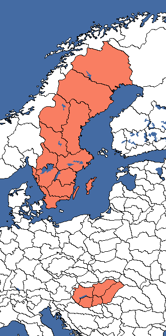
瑞典与匈牙利联合王国是在 匈牙利决定「选举一位民主国王」并把Swedish
匈牙利决定「选举一位民主国王」并把Swedish 国王卡尔五世·威廉扶上王位时成立的国家。如果匈牙利是民主主义国家、处于战争状态或世界紧张度高于 85%、完全独立且拥有 50
国王卡尔五世·威廉扶上王位时成立的国家。如果匈牙利是民主主义国家、处于战争状态或世界紧张度高于 85%、完全独立且拥有 50
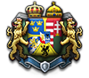
政治点数，国王便可以直接统治该国。当成立时，该国颜色不变，所有 Swedish州都会被转为核心领土。
Swedish州都会被转为核心领土。
| 意识形态 | 国家名称 |
|---|---|
| 瑞典与匈牙利联合王国 | |
| 瑞典与匈牙利人民联邦共和国 | |
| 泛欧民族运动 | |
| 瑞典与匈牙利联合王国 |
联合尼德兰
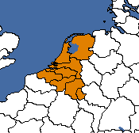
联合尼德兰是一个可成立国家，代表着 1819—1839 年间存在的联合尼德兰王国。其历史首都为阿姆斯特丹、海牙和布鲁塞尔。 荷兰是其合法继承国，并拥有一支专门致力于低地国家重新统一的国策分支。
荷兰是其合法继承国，并拥有一支专门致力于低地国家重新统一的国策分支。
- Formation
荷兰国策树中包含若干有助于成立统一尼德兰的焦点，尽管该 DLC 并未解锁上述决议。焦点「重振缓冲国提案」可以在不发生冲突的情况下把所有必需领土移交给尼德兰。「把社会主义带到南方」会给予对比利时和卢森堡的傀儡战争目标，而「联合尼德兰」则给予吞并战争目标。


成立时，该国颜色变为深橙色，所有必需州都会被转为核心领土。
比荷卢联邦
焦点「成立比荷卢」会解锁另一个统一决议，唯一的区别在于国家名称和国旗。
- Formation
| 意识形态 | 国家名称（伦敦条约） | 国家名称（比荷卢统一） |
|---|---|---|
| 尼德兰联合王国 | 比荷卢联邦 | |
| 比荷卢社会主义国 | 人民联合省 | |
| 比利时雄狮 | Dutch Rijk（尼德兰帝国） | |
| 联合省 | 尼德兰王国 |
Template:Navbox（导航框模板）